Rabivy and AX Pharmaceuticals are fictional and were created solely for the purposes of this demonstration and portfolio project.
Introduction
Rabivy is AX Pharmaceutical’s obesity asset with a monthly (or less frequent) dosing regimen and cardiometabolic positioning. As a pre-launch asset, no real-world prescribing data yet exists. Commercial analytics teams must therefore develop robust methods to identify which Healthcare Professionals (HCPs) are most likely to prescribe Rabivy at launch and to understand the key drivers of early adoption. The closest benchmarks are the launches of semaglutide (Wegovy) and tirzepatide (Zepbound).
The primary objective of this analysis is to build and validate a propensity model that predicts which HCPs are likely to prescribe Rabivy in the first 12 weeks post-launch.
Data Generation
Because no real prescribing labels exist, we developed a fully synthetic dataset of 5,000 HCPs. The data-generating process (DGP) was explicitly constructed to reflect realistic clinical and commercial drivers observed in analogous GLP-1 launches. Key features were simulated across prescription behaviour, patient panel characteristics, payer/access dynamics, and rep engagement. A binary outcome (“likely to prescribe”) was generated from a known ground-truth function, allowing rigorous validation that models recover the planted signals.
Modelling Approach
We evaluated three complementary modelling strategies:
Logistic Regression – A transparent, interpretable baseline using main effects.
XGBoost – A gradient boosting model that captures non-linear relationships and interactions, with strong explainability via SHAP.
Feed-Forward Neural Network (MLP) – A deep learning model implemented in keras3 (TensorFlow) to explore more complex pattern learning.
All models were trained on the same set of engineered features and evaluated on a held-out test set (30%).
Evaluation Framework
To ensure robust and unbiased assessment, we implemented a structured evaluation harness using a golden test set — a 30% hold-out portion of the data that was completely withheld from model training and hyperparameter tuning. This approach simulates how the models would perform on future, unseen HCPs.
All models were evaluated on the golden test set using a consistent set of metrics:
Discrimination: AUC and Gini coefficient.
Balanced performance: Balanced Accuracy, Sensitivity, and Specificity.
Precision: The proportion of HCPs predicted as likely to prescribe who actually were (Positive Predictive Value).
Calibration: Brier Score and visual calibration plots (predicted vs. observed rates).
Signal recovery: Comparison of feature importance against the planted ground-truth drivers from the DGP.
This multi-metric harness provides a comprehensive view of both predictive power and practical usability, allowing confident model selection for commercial deployment.
Disclaimer: This project is an independent demonstration and was not commissioned by any pharmaceutical company.
Simulation
Variable 1 - HCP Specialty
Specialty is the foundational variable in the simulation; all downstream variables are drawn conditional on it. Three prescriber types are included: Primary Care, Endocrinology, and Obesity Medicine.
Probabilities are calibrated to real-world GLP-1 (Glucagon-Like Peptide-1) prescribing data from analogous launches (semaglutide/Wegovy, tirzepatide/Zepbound). BCBS Blue Health Intelligence analysis of weight-management GLP-1 prescriptions found that fewer than 10% of scripts were written by endocrinologists and obesity medicine specialists combined, with the large majority originating from primary care settings. A Northwestern Medicine longitudinal study found primary care’s share of first-time GLP-1 prescriptions grew from 8% in 2013 to 57% by 2019 — a trend that has continued.
Assumptions: Primary Care 82% / Endocrinology 10% / Obesity Medicine 8%
ggplot(hcp_df, aes(x = specialty, fill = specialty)) +geom_bar() +scale_fill_manual(values = Rabivy_palette[1:3]) +labs(title ="HCPs Specialty Breakdown",subtitle ="Spread of HCPs across the various specialties",x =NULL, y ="Count") + Rabivy_theme +theme(legend.position ="none")
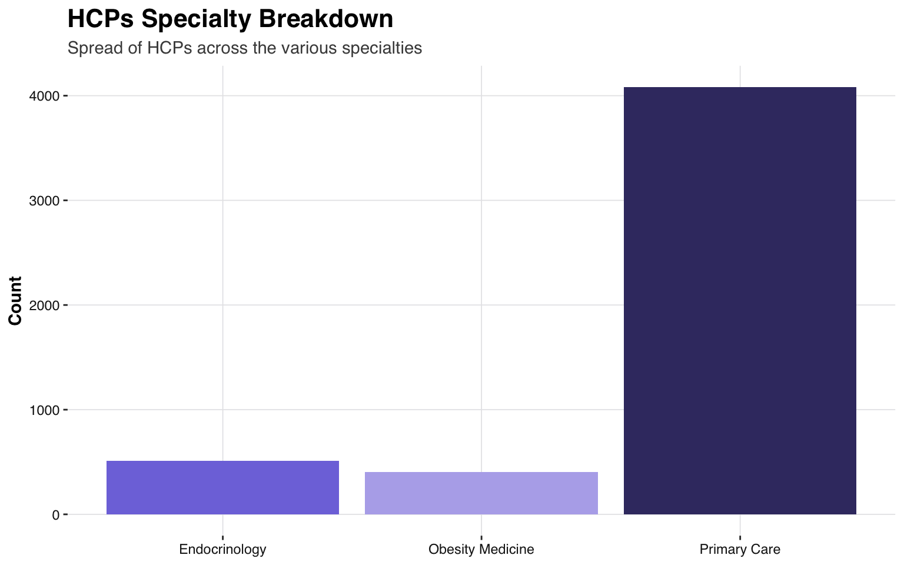
Variable 2 - Monthly GLP-1 Rx Volume per HCP
Total GLP-1 scripts written per HCP per month across all brands. Drawn from a negative binomial distribution, which captures the characteristic right-skew of prescriber volume: most HCPs are low-frequency, with a small tail of high-volume prescribers.
Average volume differs by specialty to reflect how concentrated each doctor’s patient panel is around GLP-1-eligible patients. Obesity medicine specialists are assumed to write the most (assumption -> mean ~60/month), as nearly their entire practice is weight-management focused. Endocrinologists sit in the middle (assumption -> mean ~35/month), prescribing for both diabetes and obesity. Primary care doctors write the fewest individually (assumption -> mean ~12/month), though they make up the bulk of the prescriber population. These figures are assumptions - per-HCP volume data is proprietary to IQVIA Xponent and not publicly reported.
Approximately 60% of primary care HCPs in the simulation are zero-writers - this is an assumption - they hold a relevant specialty but have not yet adopted GLP-1 prescribing. Endocrinologists and obesity medicine specialists are excluded from zero-inflation, as they are highly likely to prescribe GLP-1s given their patient population.
Assumptions: mean scripts/month by specialty - Obesity Med ~60, Endo ~35, Primary Care ~12; zero-inflated at 60% for primary care HCPs only.
Show code
# V2: Monthly GLP-1 Rx Volume (zero-inflated negative binomial, by specialty)# Zero-writer flag: conditional on specialty (PCPs only)hcp_df$zero_writer <-as.logical(rbinom(n, size =1, prob =ifelse(hcp_df$specialty =="Primary Care", 0.6, 0)))# Mu conditional on specialty - reflects patient panel concentrationmu_by_specialty <-ifelse( hcp_df$specialty =="Obesity Medicine", 60,ifelse(hcp_df$specialty =="Endocrinology", 35, 12))rx_volume_raw <-rnbinom(n, mu = mu_by_specialty, size =1.5)hcp_df$rx_volume_monthly <-ifelse(hcp_df$zero_writer, 0, rx_volume_raw)# Standardize rx_volume_monthly to comparable scale (z-score)hcp_df$rx_volume_z <-scale(hcp_df$rx_volume_monthly)[,1]
Show code
ggplot(hcp_df[!hcp_df$zero_writer, ], aes(x = specialty, y = rx_volume_monthly, fill = specialty)) +geom_boxplot(outlier.alpha =0.3) +scale_fill_manual(values =setNames(Rabivy_palette_categorical,c("Primary Care", "Endocrinology", "Obesity Medicine"))) +labs(title ="Monthly Script Volume by Specialty",subtitle ="Active writers only (excludes zero-writers)",x =NULL, y ="Monthly GLP-1 Scripts") + Rabivy_theme +theme(legend.position ="none")
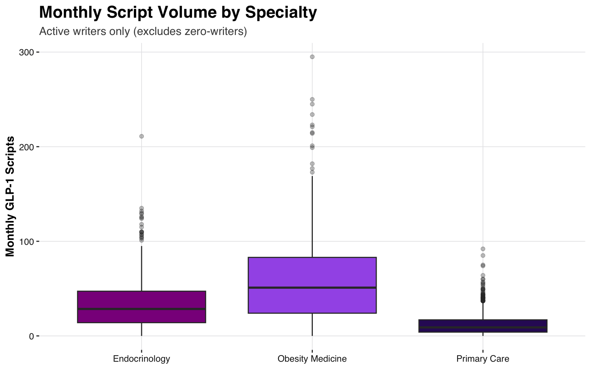
Variable 3 - NRx Share (new patient starts as proportion of total GLP-1 scripts)
This measures what share of a HCP’s GLP-1 prescriptions are for new patients starting treatment, versus existing patients on repeat scripts. Most active prescribers are mainly managing existing patients, with a smaller flow of new starts each month - so the simulation assumes around 25% new starts on average, with some variation across doctors. This figure is a calibrated assumption rather than one taken directly from published data, as HCP-level new-start ratios are not publicly reported. Doctors who write zero GLP-1 scripts are assigned zero new starts too.
Assumptions: ~25% new starts on average; conservative given rising market trend; zero for non-writers.
Show code
# V3: NRx Sharenrx_share_raw <-rbeta(n, shape1 =2, shape2 =6)hcp_df$nrx_share <-ifelse(hcp_df$zero_writer, 0, nrx_share_raw)# Derived: absolute NRx counthcp_df$nrx_monthly <-round(hcp_df$rx_volume_monthly * hcp_df$nrx_share)ggplot(hcp_df[!hcp_df$zero_writer, ], aes(x = nrx_share)) +geom_histogram(fill ="#7F77DD", bins =30, color ="#FFFFFF", linewidth =0.2) +labs(title ="Distribution of New-Start Share",subtitle ="Across all active GLP-1 prescribers",x ="NRx Share", y ="Number of HCPs") + Rabivy_theme
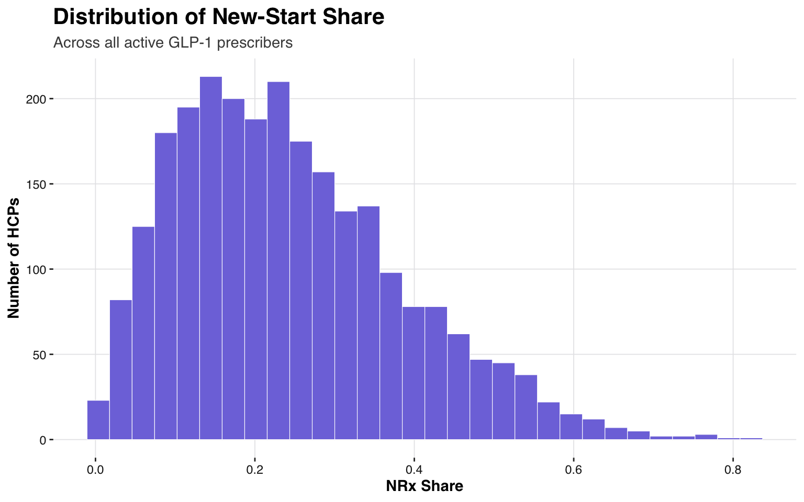
Show code
ggplot(hcp_df[!hcp_df$zero_writer, ], aes(x = rx_volume_monthly, y = nrx_share, color = specialty)) +geom_point(alpha =0.5, size =1.3) +scale_color_manual(values =setNames(Rabivy_palette_categorical,c("Primary Care", "Endocrinology", "Obesity Medicine"))) +labs(title ="Volume vs. New-Start Share, by Specialty",subtitle ="Are high-volume writers also high new-start writers?",x ="Monthly GLP-1 Scripts", y ="NRx Share (New Starts)", color ="Specialty") + Rabivy_theme
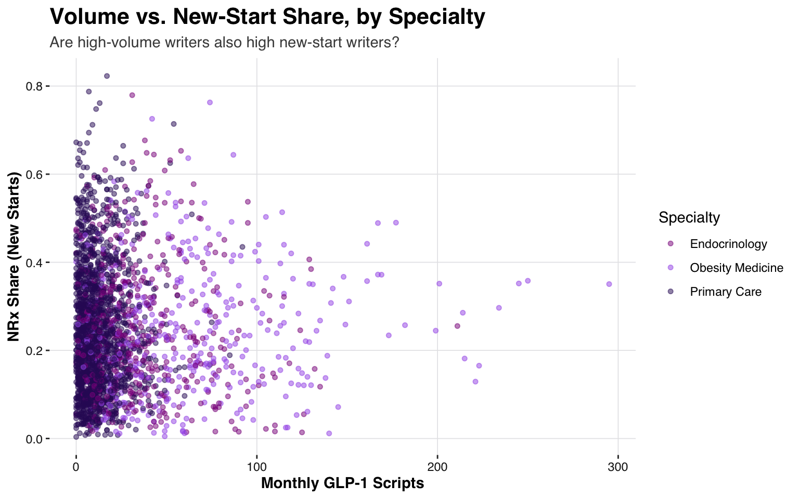
Variable 4 - Payer Mix
Captures what share of a HCP’s GLP-1 patients fall into each payer category: Commercial, Medicare, Medicaid, or out-of-pocket. This is conditional on specialty, reflecting differences in typical patient population - obesity medicine clinics see more cash-pay patients, while primary care serves a broader payer mix including more government insurance.
These figures are educated assumptions, set against a backdrop of real but shifting policy: Medicaid coverage of GLP-1s for obesity is currently optional and has been narrowing (13 states covering as of January 2026, down from 16 in 2025), while a new Medicare GLP-1 Bridge demonstration program is set to begin in July 2026, temporarily opening limited obesity-indication coverage. This volatility means payer mix at Rabivy’s eventual launch is genuinely uncertain and should be revisited closer to launch.
Assumptions: Commercial/Medicare/Medicaid/OOP - Primary Care 30/40/20/10, Endocrinology 50/30/12/8, Obesity Medicine 55/18/7/20.
# Reshape payer mix to long format for plottingpayer_long <- hcp_df %>%group_by(specialty) %>%summarise(Commercial =mean(pct_commercial),Medicare =mean(pct_medicare),Medicaid =mean(pct_medicaid),OOP =mean(pct_oop) ) %>%pivot_longer(cols =-specialty, names_to ="payer_type", values_to ="avg_share")ggplot(payer_long, aes(x = specialty, y = avg_share, fill = payer_type)) +geom_bar(stat ="identity", position ="stack") +scale_fill_manual(values =setNames(c("#7F77DD", "#5A52B8", "#3D3870", "#B5AFEB"),c("Commercial", "Medicare", "Medicaid", "OOP"))) +labs(title ="Payer Mix by Specialty",subtitle ="Average share of Commercial, Medicare, Medicaid, and OOP patients",x =NULL, y ="Average Share", fill ="Payer Type") + Rabivy_theme
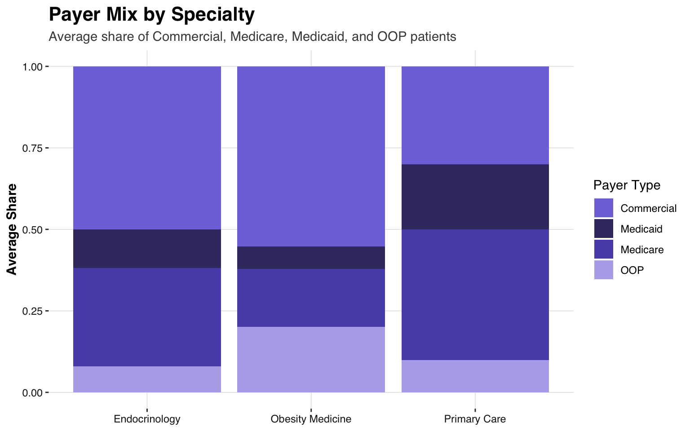
Variable 5 - Formulary Coverage Score
This represents Rabivy’s likely formulary tier given the dominant payer type for each HCP’s patient panel: Preferred (no friction), Non-preferred (cost-share barrier), Prior Authorization required (time/effort barrier), or Not covered (effectively blocked).
These are educated assumptions, deliberately stricter for Medicare and Medicaid, reflecting the current policy reality: obesity coverage is not yet standard for either program. OOP patients face no formulary barrier.
ggplot(hcp_df, aes(x = dominant_payer, fill = formulary_tier)) +geom_bar(position ="fill") +scale_fill_manual(values =setNames(c("#B5AFEB", "#7F77DD", "#5A52B8", "#3D3870"),c("Preferred", "NonPreferred", "PARequired", "NotCovered"))) +labs(title ="Formulary Access by Dominant Payer",subtitle ="Share of HCPs at each formulary tier, by payer type",x =NULL, y ="Share of HCPs", fill ="Formulary Tier") + Rabivy_theme
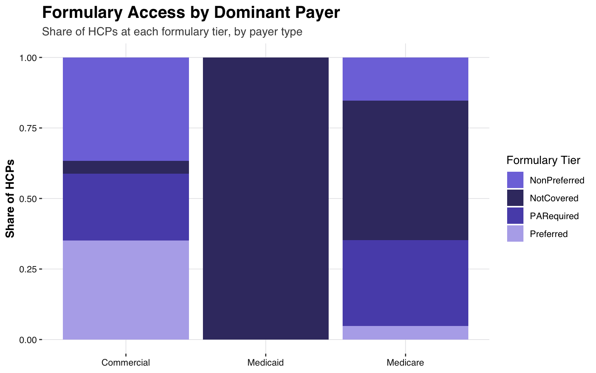
Variable 6 - Prior Authorization Burden
Estimates the likelihood that a GLP-1 prescription requires prior authorization, based on the HCP’s dominant payer type. Drawn from a Beta distribution per payer, which captures realistic variation in PA burden rather than a single fixed rate.
These are educated assumptions: Medicare and Medicaid are weighted toward higher PA burden, consistent with the current obesity-coverage landscape where both programs only recently began (or are about to begin) covering GLP-1s for obesity, typically with strict gatekeeping. Out-of-pocket patients face no PA burden.
Captures whether a HCP has prescribed any AXPharmaceuticals product (e.g. Repatha) in the last 24 months - a proxy for existing trust and familiarity. Three categories: no AXPharmaceuticals history (cold start), one product (narrow relationship), or two or more products (embedded in the AXPharmaceuticals ecosystem).
This is a pure internal assumption - AXPharmaceuticals’s actual rep relationship and prior-product history lives in CRM/Veeva data, which isn’t publicly available. The distribution is conditional on specialty: Repatha is a cardiometabolic drug, so primary care and endocrinology - who manage cardiovascular risk more broadly - are assumed to have higher prior AXPharmaceuticals exposure than obesity medicine.
Assumptions: No history/One product/Two+ - Primary Care 40/38/22, Endocrinology 35/40/25, Obesity Medicine 65/25/10.
Show code
# V7: Existing AXPharmaceuticals Relationship Score, conditional on specialtyAXPharmaceuticals_probs <-list("Primary Care"=c(None =0.40, One =0.38, TwoPlus =0.22),"Endocrinology"=c(None =0.35, One =0.40, TwoPlus =0.25),"Obesity Medicine"=c(None =0.65, One =0.25, TwoPlus =0.10))hcp_df$AXPharmaceuticals_relationship <-sapply(hcp_df$specialty, function(sp) {sample(names(AXPharmaceuticals_probs[[sp]]), size =1, prob = AXPharmaceuticals_probs[[sp]])})ggplot(hcp_df, aes(x = specialty, fill =factor(AXPharmaceuticals_relationship, levels =c("None", "One", "TwoPlus")))) +geom_bar(position ="fill") +scale_fill_manual(values =setNames(c("#3D3870", "#7F77DD", "#B5AFEB"),c("None", "One", "TwoPlus"))) +labs(title ="Existing AXPharmaceuticals Relationship by Specialty",subtitle ="Share of HCPs with prior AXPharmaceuticals product history",x =NULL, y ="Share of HCPs", fill ="AXPharmaceuticals Relationship") + Rabivy_theme
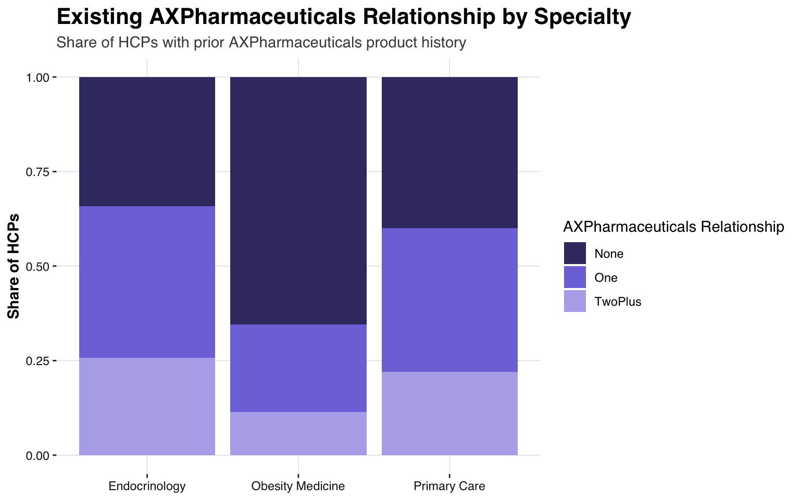
Variable 8 - Representative Engagement Recency
Captures how recently an AXPharmaceuticals rep has engaged with this HCP, decayed over time - a recent contact carries a strong signal, a contact six months ago carries almost none. Targeting status is now conditional on two factors: prescribing volume (reps prioritize high-volume writers) and existing AXPharmaceuticals relationship (reps prioritize warmer, pre-existing relationships). HCPs ranking high on both are most likely to be actively targeted; cold, low-volume HCPs are least likely.
Days since last contact are drawn from an Exponential distribution - targeted HCPs average ~30 days since contact, non-targeted HCPs average ~120 days. This is converted to a decay score (0.97^days), so very recent contact scores near 1, and contact from months ago decays toward 0.
This is a pure internal assumption - actual Veeva/CRM rep engagement data isn’t publicly available, but the logic that targeting follows volume and relationship strength is a reasonable commercial behavior pattern.
Assumptions: Targeting probability scaled by volume percentile + AXPharmaceuticals relationship tier; targeted mean 30 days since contact, non-targeted mean 120 days; decay rate 0.97 per day.
Show code
# V8: Rep Engagement Recency, conditional on volume + AXPharmaceuticals relationship# Targeting score: volume percentile + relationship tiervolume_pctile <-rank(hcp_df$rx_volume_monthly) / nrelationship_weight <-ifelse( hcp_df$AXPharmaceuticals_relationship =="TwoPlus", 1.0,ifelse(hcp_df$AXPharmaceuticals_relationship =="One", 0.5, 0))targeting_score <-0.6* volume_pctile +0.4* relationship_weight# Convert to targeting probability (calibrated so ~40% end up targeted)targeting_prob <- targeting_score /max(targeting_score) *0.7# scaling factor tuned for ~40% targetedhcp_df$targeted <-rbinom(n, size =1, prob = targeting_prob)# Days since last contact, conditional on targeted statushcp_df$days_since_contact <-ifelse( hcp_df$targeted ==1,rexp(n, rate =1/30),rexp(n, rate =1/120))# Decay scorehcp_df$rep_engagement_score <-0.97^ hcp_df$days_since_contact
Show code
decay_df <-data.frame(days =0:180)decay_df$score <-0.97^ decay_df$daysggplot(decay_df, aes(x = days, y = score)) +geom_line(color ="#7F77DD", linewidth =1.2) +geom_vline(xintercept =30, linetype ="dashed", color ="#5A52B8") +geom_vline(xintercept =120, linetype ="dashed", color ="#3D3870") +annotate("text", x =30, y =0.9, label ="Targeted\navg: 30 days", color ="#5A52B8", size =3, hjust =-0.1) +annotate("text", x =120, y =0.9, label ="Non-targeted\navg: 120 days", color ="#3D3870", size =3, hjust =-0.1) +labs(title ="Rep Engagement Decay Over Time",subtitle ="Score = 0.97^days since last contact",x ="Days Since Last Contact", y ="Engagement Score") + Rabivy_theme
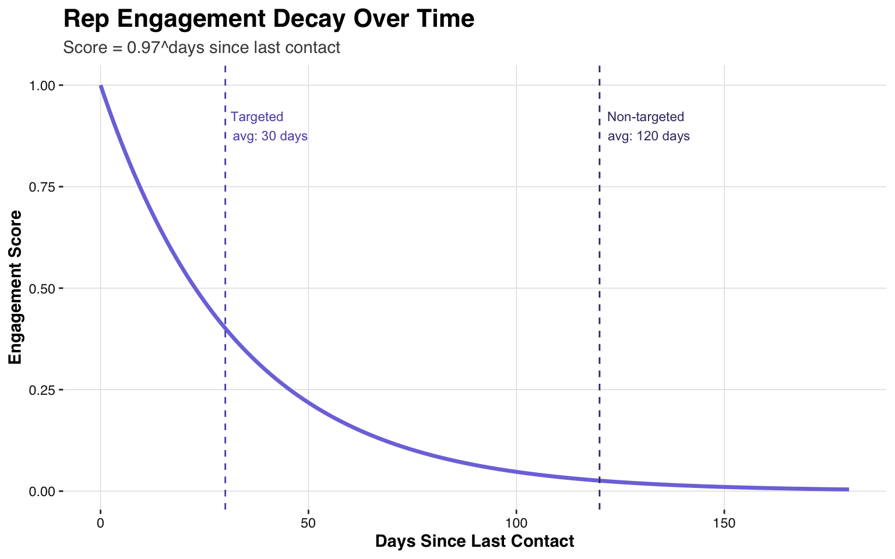
Show code
ggplot(hcp_df, aes(x =factor(targeted, labels =c("Not Targeted", "Targeted")), y = rep_engagement_score, fill =factor(targeted))) +geom_boxplot(outlier.alpha =0.3) +scale_fill_manual(values =c("0"="#3D3870", "1"="#7F77DD")) +labs(title ="Rep Engagement Score by Targeting Status",subtitle ="Targeted HCPs show stronger, more recent rep contact",x =NULL, y ="Rep Engagement Score") + Rabivy_theme +theme(legend.position ="none")
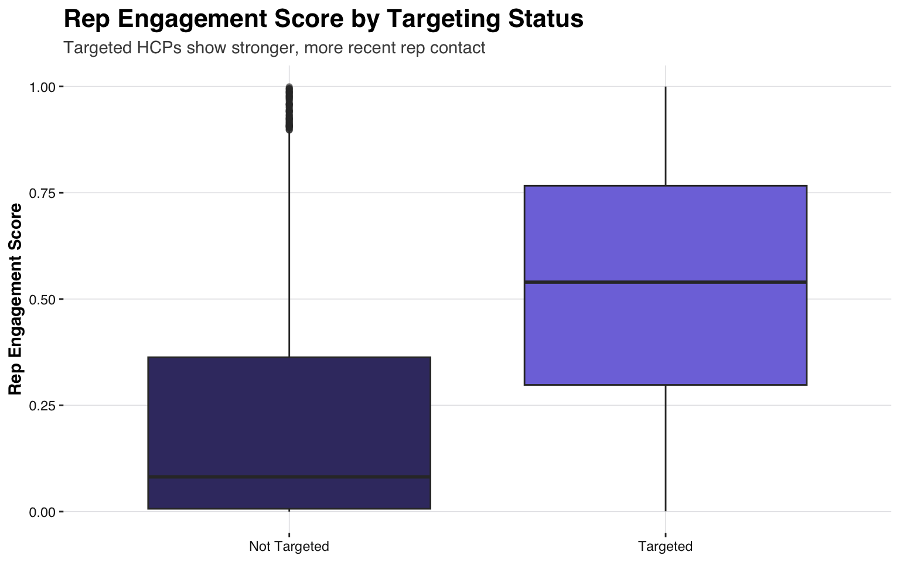
Variable 9 - Competitor Brand Mix
This captures the current GLP-1 brand landscape - specifically, what share of their existing GLP-1 patients are on Novo Nordisk products (Ozempic/Wegovy) versus Eli Lilly products (Mounjaro/Zepbound) versus other brands. This matters for identifying switching opportunities: doctors with patients heavily concentrated on a single competitor brand represent a different commercial target than doctors actively starting new, brand-undecided patients especially given Rabivy’s monthly injection benefit.
Market share figures are calibrated assumptions, anchored to recent published estimates, though current reporting varies meaningfully by source and methodology (revenue share vs. volume share, and the market is shifting quickly between the two main competitors). We use a simplified three-way split: Novo Nordisk ~54%, Eli Lilly ~35%, Other ~11%.
Assumptions: Brand mix per HCP drawn from a multinomial distribution at the market-level split (Novo 54% / Lilly 35% / Other 11%), applied uniformly across specialties as a starting assumption.
competitor_long <- hcp_df %>%group_by(specialty) %>%summarise(Novo_Nordisk =mean(pct_novo),Eli_Lilly =mean(pct_lilly),Other =mean(pct_other_brand) ) %>%pivot_longer(cols =-specialty,names_to ="competitor_type",values_to ="avg_share")ggplot(competitor_long, aes(x = specialty, y = avg_share, fill = competitor_type)) +geom_bar(stat ="identity", position ="stack") +scale_fill_manual(values =setNames(c("#7F77DD", "#5A52B8", "#3D3870", "#B5AFEB"),c("Novo_Nordisk", "Eli_Lilly", "Other"))) +labs(title ="Competitor Brand by Specialty",subtitle ="Which company currently leads each doctor's GLP-1 patient panel",x =NULL, y ="Average Share", fill ="Competitor Brand") + Rabivy_theme
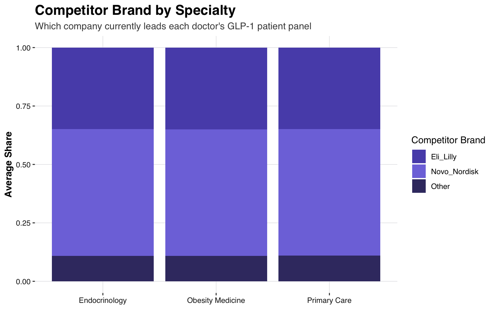
Variable 10 - Years in Practice
Years in practice serves as a stratifying variable rather than a primary driver of Rabivy prescribing. More experienced HCPs may be slower to adopt new therapies relative to younger colleagues. We would expect a modest negative association with early Rabivy uptake after controlling for volume, access, and clinical eligibility.
This variable is simulated from a normal distribution truncated between 5 and 40 years to reflect realistic physician career lengths. No strong specialty gradient is imposed because the effect is expected to operate similarly across primary care, endocrinology, and obesity medicine once other factors are held constant.
Assumptions: Mean 18 years (SD 8), truncated 5–40 years; slight negative effect on propensity after adjustment for volume and access.
Show code
# V10: Years in Practice hcp_df$years_practice <-pmax(5, pmin(40, round(rnorm(n, mean =18, sd =8))))ggplot(hcp_df, aes(x = years_practice, fill = specialty)) +geom_density(alpha =0.55, adjust =1.1) +scale_fill_manual(values = Rabivy_palette[1:3]) +labs(title ="Distribution of Years in Practice by Specialty",subtitle ="Stratifying variable with modest expected negative effect on early adoption",x ="Years in Practice", y ="Density", fill ="Specialty") + Rabivy_theme +theme(legend.position ="right")
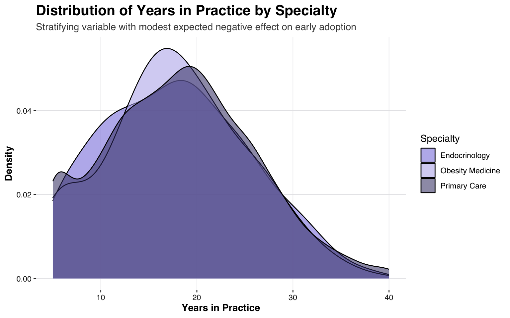
Variable 11 - Obesity Prevalence
Obesity prevalence in a HCP’s patient panel is one of the strongest clinical signals of Rabivy eligibility. HCPs whose panels contain a high proportion of patients with obesity have a much larger addressable population for a new obesity-indicated GLP-1.
This variable is simulated conditional on specialty to reflect real differences in patient mix: obesity medicine specialists see the highest concentration, followed by endocrinologists, with primary care showing the broadest but lower average prevalence.
Higher obesity prevalence is expected to be a major positive driver of Rabivy prescribing propensity, especially when combined with high new-start volume and favourable access. This variable captures the core clinical opportunity that commercial targeting models must identify.
Assumptions: Beta distribution with specialty-specific means (Obesity Medicine 68%, Endocrinology 42%, Primary Care 22%); values truncated 8–92% for realism.
Show code
# V11: Obesity Prevalenceob_prev_mean <-ifelse( hcp_df$specialty =="Obesity Medicine", 0.68,ifelse(hcp_df$specialty =="Endocrinology", 0.42, 0.22))hcp_df$obesity_prev <-rbeta(n, shape1 = ob_prev_mean *9, shape2 = (1- ob_prev_mean) *9)hcp_df$obesity_prev <-pmax(0.08, pmin(0.92, hcp_df$obesity_prev))ggplot(hcp_df, aes(x = specialty, y = obesity_prev, fill = specialty)) +geom_boxplot(outlier.alpha =0.25) +scale_fill_manual(values = Rabivy_palette[1:3]) +labs(title ="Obesity Prevalence in Patient Panel by Specialty",subtitle ="Major positive driver of Rabivy prescribing propensity",x =NULL, y ="Obesity Prevalence", fill ="Specialty") + Rabivy_theme +theme(legend.position ="none")
A recent sample request is used as a behavioral proxy for active interest and intent to trial a new therapy. HCPs who request samples, especially for a new cardiometabolic asset, signal both familiarity with the product class and willingness to initiate patients. This variable is generated with higher probability among targeted HCPs and high-volume writers, reflecting realistic rep-driven and self-driven interest patterns observed in prior GLP-1 launches.
In the propensity model, recent sample requests are expected to exert a positive but secondary effect - amplifying the signal from high volume, good access, and high obesity prevalence rather than acting as a standalone driver.
Assumptions: Probability increases with targeting status and monthly GLP-1 volume; overall rate ~35–40% of HCPs show a recent request.
Show code
# V12: Recent Sample Request # Binary proxy for active interest / intent to trialsample_prob <-pmax(0.08, pmin(0.82, 0.22+0.35* hcp_df$targeted +0.28*scale(hcp_df$rx_volume_monthly)[,1]))hcp_df$sample_request_recent <-rbinom(n, 1, prob = sample_prob)ggplot(hcp_df, aes(x =factor(targeted, labels =c("Not Targeted", "Targeted")), fill =factor(sample_request_recent))) +geom_bar(position ="fill") +scale_fill_manual(values =c("#3D3870", Rabivy_violet), labels =c("No Recent Sample", "Recent Sample Request")) +labs(title ="Recent Sample Request by Targeting Status",subtitle ="Behavioural signal of active interest: Higher among targeted & high-volume HCPs",x =NULL, y ="Proportion of HCPs", fill ="Sample Request") + Rabivy_theme
HCPs who are more academically engaged (i.e., through publications, conference attendance etc.) are often earlier adopters of new therapies. This may reflect greater exposure to emerging evidence, participation in clinical trials, or stronger professional networks that facilitate awareness of new treatment options.
Assumptions: Simulated as a right-skewed count variable reflecting the combination of recent publications and conference activity in the last 3 years; distribution is capped at a realistic upper limit.
Show code
# V13: Continuous Learningacademic_raw <-rpois(n, lambda =1.8) +rbinom(n, size =4, prob =0.25)hcp_df$academic_engagement <-pmin(12, academic_raw) # cap at realistic maximum
Show code
ggplot(hcp_df, aes(x = academic_engagement)) +geom_histogram(fill ="#7F77DD", bins =10, color ="#FFFFFF", linewidth =0.2) +labs(title ="Distribution of Academic Engagement Score",subtitle ="Publications + conferences attended in last 3 years",x ="Academic Engagement Score", y ="Count") + Rabivy_theme
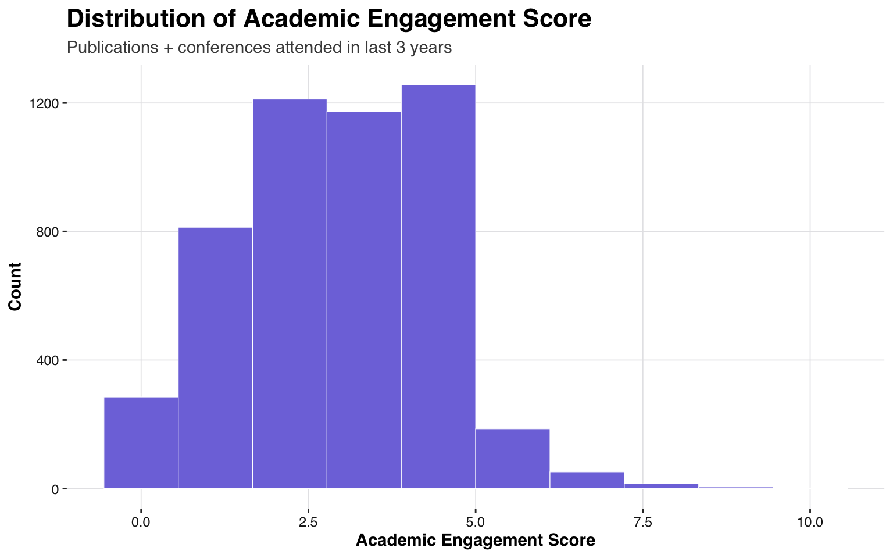
Dependent Variable: Binary Prescribing Outcome
Because Rabivy has not yet launched, no real-world prescribing labels exist. We therefore simulate the binary outcome (“likely to prescribe Rabivy in the first 12 weeks post-launch”) from an explicit, fully transparent data-generating process (DGP). This approach is deliberate and methodologically strong for a pre-launch commercial analytics project: it allows us to plant realistic clinical and commercial drivers and later demonstrate that our models recover those same drivers rather than spurious patterns.
The DGP constructs a latent propensity on the logit scale as a linear combination of the most important features. Coefficients are chosen to reflect both published evidence from analogous GLP-1 launches and standard commercial targeting logic:
Monthly GLP-1 prescribing volume and new-start share (high-volume, early-adopter HCPs are the clearest early prescribers of a new agent; Huskamp et al., 2013).
Obesity prevalence in the patient panel (core clinical eligibility signal).
Favourable formulary access and low prior-authorisation burden (access friction is one of the largest real-world barriers in the current GLP-1 market).
Obesity Medicine or Endocrinology specialty (concentrated eligible patient panels).
Moderate positive drivers:
Existing relationship with AX Pharmaceuticals (trust and familiarity with the company’s cardiometabolic portfolio).
Recent rep engagement and recent sample request (detailing + active interest effects).
Commercial or cash-pay dominant payer mix (lower access friction on average).
Higher academic engagement
Stratifying / modest negative driver:
Years in practice (more experienced and older physicians tend to adopt new therapies more slowly once volume and access are controlled).
Moderate Gaussian noise is added so the relationship between features and outcome is strong but imperfect mirroring real-world prescribing decisions. The resulting positive rate (~22%) is calibrated to be realistic for early post-launch adoption of a new monthly GLP-1 in a competitive market.
This transparent DGP is the foundation for all subsequent model evaluation - we can test whether each model correctly ranks the planted drivers at the top of feature importance (Rainio et al., 2024). Models that pass statistical tests but fail to recover the known ground truth are of limited value for commercial decision-making.
To validate the synthetic data-generating process, we examine the distribution of the ground-truth (pre-noise) propensity scores and the resulting binary outcome. The overall simulated prescribing rate (“likely to prescribe Rabivy in the first 12 weeks post-launch”) is 28.1%. This rate is realistic for a new monthly GLP-1 therapy in a competitive market, where early adoption is concentrated among high-intent specialists and high-volume prescribers while remaining selective among the broader primary care population.
Show code
# Load saved dataset for reproducible modelinghcp_df <-readRDS("hcp_simulation_data.rds")
Show code
# True probability distribution by specialtyggplot(hcp_df, aes(x = true_prob, fill = specialty)) +geom_density(alpha =0.55, adjust =1.1) +scale_fill_manual(values = Rabivy_palette[1:3]) +labs(title ="Distribution of True Prescribing Propensity by Specialty",subtitle ="Ground-truth signal before noise — clear separation by specialty and eligibility",x ="True Probability of Prescribing Rabivy", y ="Density", fill ="Specialty") + Rabivy_theme
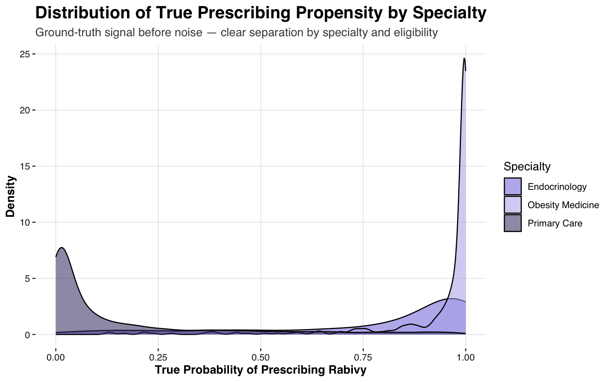
The density plot of the ground-truth propensity (before noise) shows clear separation by specialty. Obesity Medicine HCPs exhibit a strong right skew toward high propensity (near 1.0), reflecting their concentrated eligible patient panels. Endocrinologists occupy an intermediate position, while the Primary Care distribution is heavily concentrated near zero.
Show code
# Final binary outcome rate by key segmentsoutcome_summary <- hcp_df %>%group_by(specialty) %>%summarise(n =n(),prescribe_rate =mean(prescribe_likely),mean_volume =mean(rx_volume_monthly) ) %>%arrange(desc(prescribe_rate))# Nice formatted tableoutcome_summary %>%kable(digits =2,caption ="Prescribing rate and average volume by specialty",col.names =c("Specialty", "n", "Prescribing Rate", "Script Volume (mean)")) %>%kable_styling(bootstrap_options =c("striped", "hover", "condensed"))
Prescribing rate and average volume by specialty
Specialty
n
Prescribing Rate
Script Volume (mean)
Obesity Medicine
405
0.94
60.51
Endocrinology
512
0.78
35.24
Primary Care
4083
0.15
4.72
The summary table indicates:
Obesity Medicine specialists show a 94% prescribing rate with the highest average monthly GLP-1 volume (~60.5 scripts).
Endocrinologists follow at 78% (mean volume ~35.2).
HCPs in Primary Care settings (the bulk of the HCP population) has a much lower prescribing rate (15%; mean volume ~4.7).
These gradients confirm that the planted drivers (e.g., specialty, volume, obesity prevalence) produce clinically and commercially meaningful differentiation.
Train / Test Split
To enable honest out-of-sample evaluation and prevent overfitting, we partitioned the synthetic dataset into a training set (70%) and a held-out test set (30%). The split was stratified by the binary outcome (prescribe_likely) to preserve the overall positive rate and ensure both sets contained adequate representation of high- and low-propensity HCPs. All model training and hyperparameter tuning were performed exclusively on the training set. The golden test set was used solely for final performance evaluation.
Show code
# Train/test splitset.seed(123)train_idx <-createDataPartition(hcp_df$prescribe_likely, p =0.7, list =FALSE) train_df <- hcp_df[train_idx, ]test_df <- hcp_df[-train_idx, ]cat("Training set size:", nrow(train_df), " (", round(mean(train_df$prescribe_likely), 3), " positive)\n")
AUC (Area Under the ROC Curve): Measures the model’s ability to discriminate between HCPs who are likely vs. unlikely to prescribe Rabivy. An AUC of 0.5 indicates random guessing; 1 indicates perfect discrimination.
Gini Coefficient: Calculated as 2 × AUC – 1. A common industry metric that expresses discriminatory power as a percentage (0% = random, 100% = perfect).
Accuracy: The overall proportion of correct predictions (both likely and unlikely prescribers).
Balanced Accuracy: The average of sensitivity and specificity.
Sensitivity (Recall): The proportion of actual high-propensity HCPs that the model correctly identifies (true positive rate).
Specificity: The proportion of actual low-propensity HCPs that the model correctly identifies (true negative rate).
Precision (Positive Predictive Value): The proportion of HCPs predicted as likely to prescribe who actually are likely to prescribe. High precision means fewer false positives when targeting.
Brier Score: A calibration metric that measures the accuracy of predicted probabilities. It is the mean squared difference between predicted probabilities and actual outcomes. Lower values indicate better calibration.
According to Rainio and colleagues (2024), accuracy, sensitivity, specificity and precision are the most widely used evaluation metrics for binary classification.
Analyses
Model 1: Logistic Regression Baseline
Logistic regression serves as an interpretable baseline model. It allows direct examination of coefficient signs and magnitudes, which we can compare against the planted ground-truth drivers from the DGP. The model was fit using 12 engineered features as main effects only. All continuous predictors were standardised (centered and scaled to mean = 0, SD = 1).
An odds ratio (OR) greater than 1 indicates that higher values of the predictor are associated with increased odds of an HCP being likely to prescribe Rabivy, holding other variables constant. Conversely, an OR less than 1 indicates that higher values are associated with decreased odds of prescribing. Odds ratios are presented with 95% confidence intervals; predictors with p < 0.05 are considered statistically significant.
The logistic regression model demonstrates strong recovery of the planted ground-truth drivers and provides clear, actionable insights for targeting:
Top positive drivers (strongest effects):
Obesity prevalence in panel, highlighting the critical role of clinical eligibility.
Obesity Medicine specialty.
Rep engagement and formulary access
GLP-1 volume (rx_volume_z) and new-start share (nrx_share_z): Confirms high-volume, early-adopter HCPs as prime targets.
Key barriers:
Prior authorization burden (pa_burden_z): Strongly reduces the likelihood of early Rabivy propensity.
Years in practice (years_practice_z): Modest negative association, as expected.
Model Evaluation
The logistic regression was evaluated on the held-out test set to assess real-world generalizability.
Show code
# Predictions on test settest_df$logit_pred_prob <-predict(logit_model, newdata = test_df, type ="response")# 1. Discriminationlogit_roc <-roc(test_df$prescribe_likely, test_df$logit_pred_prob, quiet =TRUE)auc_value <-auc(logit_roc)gini <- (2* auc_value -1) *100
Show code
# ROC plotplot(logit_roc, main ="Logistic Regression ROC Curve (Test Set)", col = Rabivy_violet, lwd =2)
The logistic regression baseline achieved a strong test AUC of 0.9183 (Gini coefficient 83.7%). It demonstrates solid discrimination with a balanced accuracy of 81.75%, good sensitivity (69.66%), and high specificity (93.84%). Precision was 81.07%, meaning that among HCPs the model flagged as likely to prescribe, approximately 81% actually were. The Brier Score of 0.0954 indicates good calibration of the predicted probabilities.
Show code
# Calibrationtest_df$prob_bin <-cut(test_df$logit_pred_prob, breaks =seq(0, 1, by =0.1), include.lowest =TRUE)calibration <- test_df %>%group_by(prob_bin) %>%summarise(obs_rate =mean(prescribe_likely), .groups ="drop") %>%mutate(bin_mid =seq(0.05, 0.95, by =0.1))ggplot(calibration, aes(x = bin_mid, y = obs_rate)) +geom_point(size =3, color = Rabivy_violet) +geom_line(color = Rabivy_violet, linewidth =1) +geom_abline(intercept =0, slope =1, linetype ="dashed", color ="grey60") +labs(title ="Calibration Plot - Logistic Regression",subtitle ="Predicted vs Observed prescribing rates by probability bin",x ="Predicted Probability (bin midpoint)", y ="Observed Prescribing Rate") + Rabivy_theme
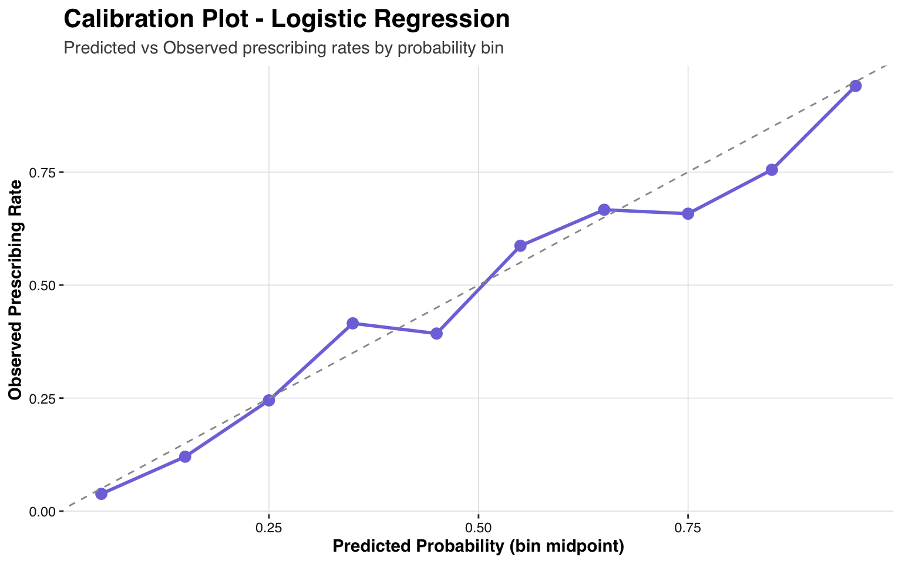
The calibration plot compares the model’s predicted probabilities (x-axis) with the actual observed prescribing rates (y-axis) binned by predicted probability.
The solid purple line shows the model’s performance.
The dashed grey line represents perfect calibration (Predicted = Observed). Any deviation from this line shows where the model is over- or under-confident.
The observed prescribing rates closely track the predicted probabilities across bins, indicating the model produces well-calibrated probabilities that can be trusted for targeting and resource allocation.
McFadden Pseudo R² is a goodness-of-fit metric for models with categorical outcomes. The output indicates that the model explains approximately 53% of the null deviance — strong explanatory power for a propensity model in this domain.
Overall, the logistic regression baseline performs exceptionally well on the test set. It not only recovers the planted drivers from the DGP (as seen in the odds ratios) but also delivers high predictive accuracy and well-calibrated probabilities. The strong performance sets a high bar for subsequent models.
Model 2: XGBoost (eXtreme Gradient Boosting)
XGBoost is a powerful gradient boosting algorithm which builds an ensemble of decision trees sequentially, where each new tree corrects the errors of the previous ones. While logistic regression offers transparency and interpretability, XGBoost typically provides superior predictive performance on tabular data by capturing non-linearities and interactions automatically.
The XGBoost model achieved a strong test AUC of 0.912 (Gini coefficient 82.4%). It demonstrates solid discrimination with a balanced accuracy of 80.89%, good sensitivity (68.20%), and high specificity (93.57% — excellent at identifying low-propensity HCPs). Precision was 80.06%, meaning that among HCPs the model flagged as likely to prescribe, roughly 80% actually were. The Brier Score of 0.0977 indicates good calibration of the predicted probabilities.
Show code
# 3. Calibration Plottest_df$xgb_prob_bin <-cut(test_df$xgb_pred_prob, breaks =seq(0, 1, by =0.1), include.lowest =TRUE)calib_xgb <- test_df %>%group_by(xgb_prob_bin) %>%summarise(obs_rate =mean(prescribe_likely), .groups ="drop") %>%mutate(bin_mid =seq(0.05, 0.95, by =0.1))ggplot(calib_xgb, aes(x = bin_mid, y = obs_rate)) +geom_point(size =3, color = Rabivy_violet) +geom_line(color = Rabivy_violet, linewidth =1) +geom_abline(intercept =0, slope =1, linetype ="dashed", color ="grey60") +labs(title ="Calibration Plot - XGBoost Model",subtitle ="Predicted vs Observed prescribing rates",x ="Predicted Probability (bin midpoint)", y ="Observed Rate") + Rabivy_theme
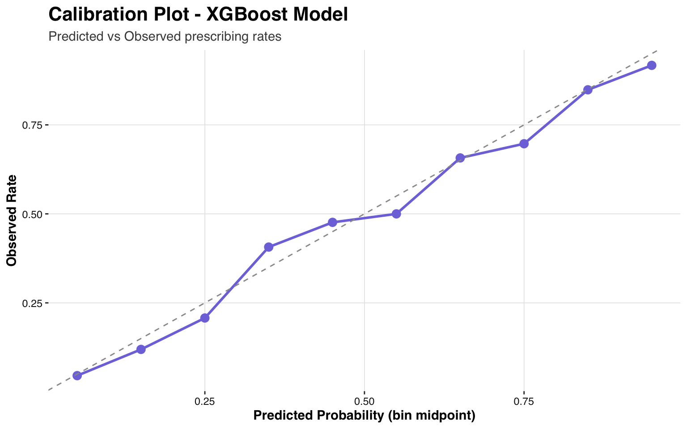
The calibration plot shows strong alignment between predicted and observed rates.
Step 2: Understanding the Model
SHAP (SHapley Additive exPlanations)
SHAP is the current gold standard for explaining XGBoost models. It decomposes every prediction into the contribution of each feature, showing exactly how much each variable pushes the predicted propensity probability up or down for every individual HCP (local explanations) as well as across the entire population (global explanations). This transparency turns the “black-box” XGBoost model into an interpretable tool for commercial decision-making.
Show code
# Reuse the same matrix creation as your test_matrixX_matrix <-model.matrix(~ . -1, data = test_df[, predictors])shap_explain <-shapviz(object = xgb_model,X = X_matrix, X_pred = X_matrix, predict_function = predict)SHAP_plot <-sv_importance(shap_explain, kind ="beeswarm", max_display =15) +geom_point(size =0.8, alpha =0.6) +ggtitle("SHAP Values: How Features Influence Rabivy Prescribing Propensity") +labs(subtitle ="Positive SHAP = increased likelihood of prescribing") + Rabivy_theme +theme(panel.grid.major =element_blank(),panel.grid.minor =element_blank())print(SHAP_plot)
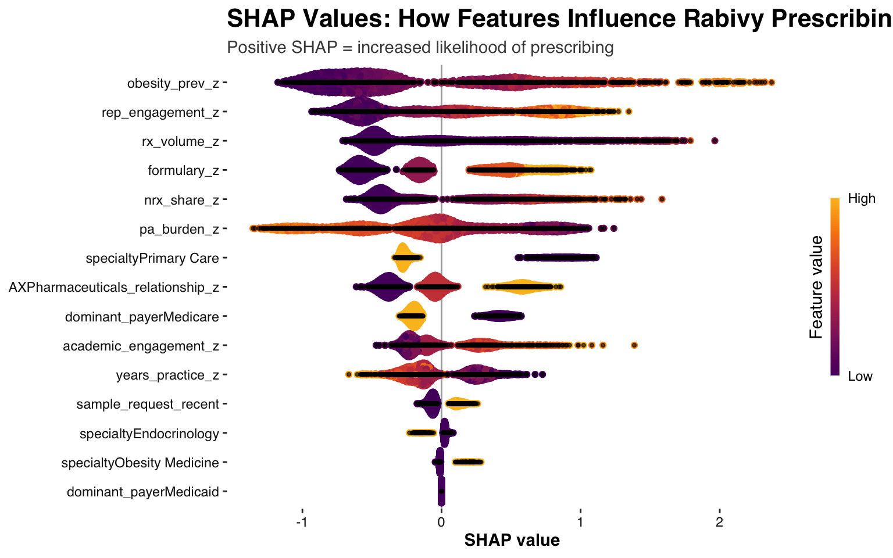
How to Interpret the SHAP Plot:
Each horizontal line represents one predictor.
Each dot represents one HCP in the test set.
The horizontal position (SHAP value) shows how much that feature increased (right) or decreased (left) the model’s predicted probability of prescribing Rabivy for that HCP.
The colour indicates the feature’s actual value for that HCP: orange/yellow = high value, purple = low value.
The predictors are ranked from most to least important based on their average absolute contribution to the model’s predictions.
Key Insights from the SHAP Plot:
Obesity prevalence in the patient panel (obesity_prev_z) is the most influential driver, with high values strongly pushing predictions upward.
Rep engagement (rep_engagement_z) and formulary access (formulary_z) also have large positive effects when favourable.
The SHAP results strongly align with both the planted ground-truth DGP and the logistic regression coefficients, reinforcing confidence in the key drivers of early Rabivy adoption.
Global SHAP Analysis
The table below ranks features by their average absolute SHAP impact — a robust measure of overall importance across all HCPs. Higher values indicate features that most strongly influence the model’s predicted prescribing propensity.
Model 3: Deep Learning Model (Multi-Layer Perceptron)
As a final modeling step, we implement a feed-forward neural network (also known as a Multi-Layer Perceptron or MLP) using the keras3 package, which runs on top of TensorFlow.
How the MLP Works:
The neural network consists of multiple layers of interconnected “neurons”:
An input layer that receives all our engineered features.
Several hidden layers (128 → 64 → 32 neurons in this model) where the network learns complex, non-linear combinations and interactions between features.
An output layer that produces a single probability (0 to 1) of the HCP being likely to prescribe Rabivy, using a sigmoid activation function.
During training, the model adjusts millions of internal weights through backpropagation to minimize prediction error. Dropout layers are included to prevent overfitting. Compared to XGBoost, MLP can learn more complex hierarchical patterns and interactions through its layered structure.
Note on Reproducibility:
Keras/TensorFlow models involve an internal random number generator. Although we applied multiple reproducibility controls, minor run-to-run variations may still occur. This is a known characteristic of deep learning frameworks. All results presented represent a representative run under fixed seeding conditions.
Show code
# ========================================================# Environment Setup for Keras3 / TensorFlow# ========================================================Sys.setenv(TF_CPP_MIN_LOG_LEVEL ="3") # Suppress TensorFlow logsp_load(keras3, tensorflow, reticulate)# Use the new clean arm64 environmentuse_condaenv(condaenv ="tf_env", conda ="/opt/anaconda3/bin/conda", required =TRUE)
Prior to model training, all predictor variables were standardized using centering and scaling. This step is essential for neural networks, as they are sensitive to the magnitude and scale of input features. Without standardization, features with larger numerical ranges can dominate the learning process and slow down convergence.
Show code
# ====================== DATA PREPARATION ======================# Robust scaling + numeric conversion# Select predictors and convert everything to numeric matrixX_train_raw <- train_df[, predictors]X_test_raw <- test_df[, predictors]# Convert factors to dummy variables and ensure all numericX_train <-model.matrix(~ . -1, data = X_train_raw) %>%as.matrix()X_test <-model.matrix(~ . -1, data = X_test_raw) %>%as.matrix()# Scale (center and scale)preprocess <-preProcess(X_train, method =c("center", "scale"))X_train <-predict(preprocess, X_train)X_test <-predict(preprocess, X_test)y_train <-as.numeric(train_df$prescribe_likely)y_test <-as.numeric(test_df$prescribe_likely)cat("Final training matrix dimensions:", dim(X_train), "\n")
Unlike XGBoost or logistic regression, neural networks do not have a direct measure of feature importance. To address this, we used Permutation Feature Importance which directly quantifies how much each feature contributes to the model’s ability to discriminate between likely and unlikely prescribers.
In this analysis, permutation importance for the MLP confirmed the same key drivers seen in the other models, increasing confidence in the overall findings.
The feed-forward neural network (MLP) achieved a strong test AUC of 0.9022 (Gini coefficient 80.4%). It demonstrates solid discrimination with a balanced accuracy of 79.23%, reasonable sensitivity (65.53%), and high specificity (92.92% — excellent at identifying low-propensity HCPs). Precision was 77.81%, meaning that among HCPs the model flagged as likely to prescribe, approximately 77% actually were. The Brier Score of 0.109 indicates reasonable calibration of the predicted probabilities.
Show code
# Platt Scaling# 1. Get raw predictions on the TRAINING set train_df$dl_pred_prob <-as.numeric(predict(keras_model, X_train, verbose =0))# 2. Fit Platt scaling model (logistic regression on raw predictions)platt_model <-glm(prescribe_likely ~ dl_pred_prob, data = train_df, family =binomial(link ="logit"))# 3. Apply Platt scaling to the TEST settest_df$dl_calibrated_prob <-predict(platt_model, newdata =data.frame(dl_pred_prob = test_df$dl_pred_prob), type ="response")# Calibration Plottest_df$dl_prob_bin <-cut(test_df$dl_calibrated_prob, breaks =seq(0, 1, by =0.1), include.lowest =TRUE)calib_dl <- test_df %>%group_by(dl_prob_bin) %>%summarise(obs_rate =mean(prescribe_likely), .groups ="drop") %>%mutate(bin_mid =seq(0.05, 0.95, by =0.1))ggplot(calib_dl, aes(x = bin_mid, y = obs_rate)) +geom_point(size =3, color = Rabivy_violet) +geom_line(color = Rabivy_violet, linewidth =1.1) +geom_abline(intercept =0, slope =1, linetype ="dashed", color ="grey60") +labs(title ="Calibration Plot - Deep Learning Model (Platt Scaled)",subtitle ="Predicted vs Observed prescribing rates after calibration",x ="Predicted Probability (bin midpoint)", y ="Observed Rate") + Rabivy_theme
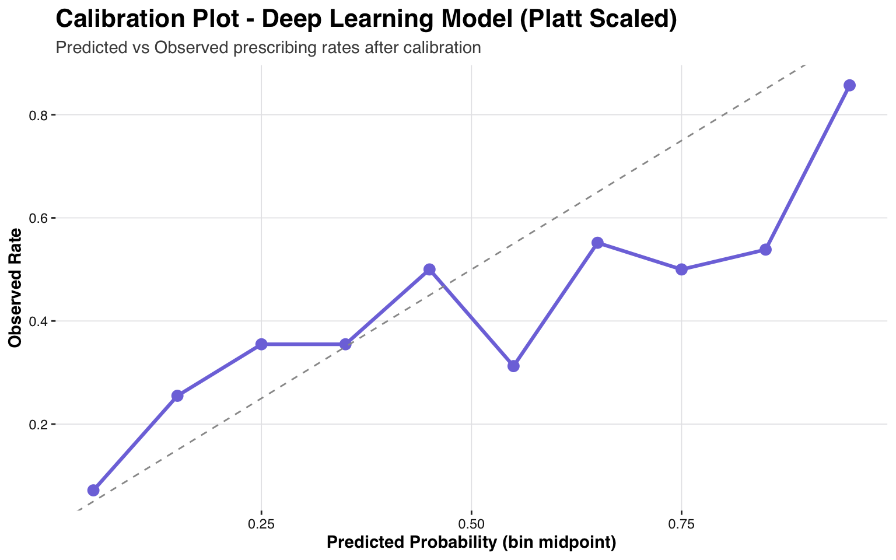
To improve the reliability of the predicted probabilities from the feed-forward neural network, we applied Platt scaling — a post-hoc calibration technique. This method fits a logistic regression model on the raw output probabilities from the neural network (using the training data) and then uses this model to adjust the probabilities on the test set. The goal is to produce better-calibrated probabilities without changing the model’s ranking ability.
Summary and Conclusion
Understanding the factors that influence HCPs adoption of new medications is essential for pharmaceutical companies, medical aid schemes, and policy makers (Huskamp et al., 2013). This analysis developed a robust propensity scoring model to identify which Healthcare Professionals are most likely to prescribe Rabivy at launch. Using a fully synthetic dataset of 5,000 HCPs and a transparent, ground-truth data-generating process, we engineered clinically and commercially meaningful features grounded in real-world GLP-1 launch dynamics. We then evaluated and compared the performance of three different models using established evaluation metrics for binary classification (Rainio et al., 2024).
All three models performed strongly on the held-out test set:
The models demonstrated excellent discrimination (all AUC > 0.90), good calibration, and consistent recovery of the planted drivers from the data-generating process.
Across all three modelling approaches, a clear and consistent set of drivers emerged. Obesity prevalence in the patient panel, representative engagement, GLP-1 prescribing volume, formulary access, and prior authorization burden were the dominant predictors of early adoption intent. This cross-model agreement increases confidence that these factors are genuinely important rather than artefacts of any single modelling technique.
Key Commercial Insights
Prioritize HCPs with high obesity prevalence among their patients and high GLP-1 volume/new-start activity.
Ensure strong formulary positioning and actively work to minimize prior authorization friction.
Invest in relationship-building and maintain active rep engagement, particularly with high-potential specialists and academically engaged prescribers.
Next Steps
While the models performed well on the synthetic test set, several important next steps remain before any real-world deployment:
Post-training evaluation on unseen data: The current evaluation was performed on a held-out portion of the synthetic dataset. The true test will be to expose the model to a completely new dataset that has not been seen during development. This will help assess how the model generalises when the underlying data distribution shifts.
Parameter drift and distribution shift: Model performance is only as good as the sample on which it was developed. It is important to monitor how the model behaves when key relationships in the data change.
Ground truth evolution: In a real deployment, the definition of “likely to prescribe” can change over time. Continuous monitoring and periodic model retraining will be necessary to ensure the model remains relevant as market conditions evolve.
References
Huskamp, H. A., O’Malley, A. J., Horvitz-Lennon, M., Taub, A. L., Berndt, E. R., & Donohue, J. M. (2013). How quickly do physicians adopt new drugs? The case of second-generation antipsychotics. Psychiatric services, 64(4), 324-330.
Ju, C., Combs, M., Lendle, S. D., Franklin, J. M., Wyss, R., Schneeweiss, S., & van der Laan, M. J. (2019). Propensity score prediction for electronic healthcare databases using super learner and high-dimensional propensity score methods. Journal of Applied Statistics, 46(12), 2216-2236. https://doi.org/10.1080/02664763.2019.1582614
Rainio, O., Teuho, J., & Klén, R. (2024). Evaluation metrics and statistical tests for machine learning. Scientific reports, 14(1), 6086. https://doi.org/10.1038/s41598-024-56706-x
Source Code
---title: "AI-ML Evals"authors: Caitlin Buenk, Tilabo Williamson, and Jurgen Becker (Project Lead) - AX Consult Group. format: html: theme: cosmo code-fold: true code-summary: "Show code" code-tools: true toc: true toc-depth: 3 fig-width: 8 fig-height: 5 output-dir: docs---::: {.text-center style="margin-bottom: 2em;"}{width="180" fig-align="center"}:::```{r packages}#| include: falselibrary(pacman)p_load(magrittr, tidyverse, psych, dplyr, prettydoc, haven, janitor, readxl, writexl, stringr, here, purrr, tibble, ggplot2, kableExtra, corrplot, pROC, brm, xgboost, vip, shapviz, caret, broom, tidyr, ROCR)``````{r plotting-setup}#| include: falseRabivy_theme <-theme(plot.background =element_rect(fill ="#FFFFFF", color =NA),panel.background =element_rect(fill ="#FFFFFF", color =NA),panel.grid.major =element_line(color ="#E5E5E8", linewidth =0.3),panel.grid.minor =element_blank(),text =element_text(color ="#000000", family ="sans"),axis.text =element_text(color ="#1A1A1A"),axis.title =element_text(color ="#000000", face ="bold"),plot.title =element_text(color ="#000000", face ="bold", size =16),plot.subtitle =element_text(color ="#4A4A4A", size =11),legend.background =element_rect(fill ="#FFFFFF"),legend.key =element_rect(fill ="#FFFFFF"),legend.text =element_text(color ="#000000"),legend.title =element_text(color ="#000000"))Rabivy_violet <-"#7F77DD"Rabivy_palette <-c("#7F77DD", "#B5AFEB", "#3D3870", "#E8E5FA", "purple")Rabivy_palette_categorical <-c("#311465", "#8B008B", "#A45EE9")```**Rabivy and AX Pharmaceuticals are fictional and were created solely for the purposes of this demonstration and portfolio project.** ## IntroductionRabivy is AX Pharmaceutical's obesity asset with a monthly (or less frequent) dosing regimen and cardiometabolic positioning. As a pre-launch asset, no real-world prescribing data yet exists. Commercial analytics teams must therefore develop robust methods to identify which Healthcare Professionals (HCPs) are most likely to prescribe Rabivy at launch and to understand the key drivers of early adoption. The closest benchmarks are the launches of semaglutide (Wegovy) and tirzepatide (Zepbound). The primary objective of this analysis is to build and validate a propensity model that predicts which HCPs are likely to prescribe Rabivy in the first 12 weeks post-launch. ## Data Generation Because no real prescribing labels exist, we developed a fully synthetic dataset of 5,000 HCPs. The data-generating process (DGP) was explicitly constructed to reflect realistic clinical and commercial drivers observed in analogous GLP-1 launches. Key features were simulated across prescription behaviour, patient panel characteristics, payer/access dynamics, and rep engagement. A binary outcome (“likely to prescribe”) was generated from a known ground-truth function, allowing rigorous validation that models recover the planted signals.## Modelling Approach We evaluated three complementary modelling strategies:1. Logistic Regression – A transparent, interpretable baseline using main effects.2. XGBoost – A gradient boosting model that captures non-linear relationships and interactions, with strong explainability via SHAP.3. Feed-Forward Neural Network (MLP) – A deep learning model implemented in keras3 (TensorFlow) to explore more complex pattern learning.All models were trained on the same set of engineered features and evaluated on a held-out test set (30%).## Evaluation FrameworkTo ensure robust and unbiased assessment, we implemented a structured **evaluation harness** using a **golden test set** — a 30% hold-out portion of the data that was completely withheld from model training and hyperparameter tuning. This approach simulates how the models would perform on future, unseen HCPs.- All models were evaluated on the golden test set using a consistent set of metrics:- Discrimination: AUC and Gini coefficient.- Balanced performance: Balanced Accuracy, Sensitivity, and Specificity.- Precision: The proportion of HCPs predicted as likely to prescribe who actually were (Positive Predictive Value).- Calibration: Brier Score and visual calibration plots (predicted vs. observed rates).- Signal recovery: Comparison of feature importance against the planted ground-truth drivers from the DGP.This multi-metric harness provides a comprehensive view of both predictive power and practical usability, allowing confident model selection for commercial deployment.Disclaimer: This project is an independent demonstration and was not commissioned by any pharmaceutical company. ## Simulation### Variable 1 - HCP SpecialtySpecialty is the foundational variable in the simulation; all downstream variables are drawn conditional on it. Three prescriber types are included: Primary Care, Endocrinology, and Obesity Medicine.Probabilities are calibrated to real-world GLP-1 (Glucagon-Like Peptide-1) prescribing data from analogous launches (semaglutide/Wegovy, tirzepatide/Zepbound). BCBS Blue Health Intelligence analysis of weight-management GLP-1 prescriptions found that fewer than 10% of scripts were written by endocrinologists and obesity medicine specialists combined, with the large majority originating from primary care settings. A Northwestern Medicine longitudinal study found primary care's share of first-time GLP-1 prescriptions grew from 8% in 2013 to 57% by 2019 — a trend that has continued. **Assumptions:** Primary Care 82% / Endocrinology 10% / Obesity Medicine 8%```{r V1-hcp-specialty-simulation}set.seed(43)n <-5000# V1: HCP Specialtyspecialty <-sample(c("Primary Care", "Endocrinology", "Obesity Medicine"),size = n,replace =TRUE,prob =c(0.82, 0.10, 0.08))hcp_df <-data.frame(hcp_id =sprintf("HCP%04d", 1:n),specialty = specialty)``````{r V1-specialty-plot}ggplot(hcp_df, aes(x = specialty, fill = specialty)) +geom_bar() +scale_fill_manual(values = Rabivy_palette[1:3]) +labs(title ="HCPs Specialty Breakdown",subtitle ="Spread of HCPs across the various specialties",x =NULL, y ="Count") + Rabivy_theme +theme(legend.position ="none")```### Variable 2 - Monthly GLP-1 Rx Volume per HCPTotal GLP-1 scripts written per HCP per month across all brands. Drawn from a negative binomial distribution, which captures the characteristic right-skew of prescriber volume: most HCPs are low-frequency, with a small tail of high-volume prescribers.Average volume differs by specialty to reflect how concentrated each doctor's patient panel is around GLP-1-eligible patients. Obesity medicine specialists are assumed to write the most (**assumption** -> mean ~60/month), as nearly their entire practice is weight-management focused. Endocrinologists sit in the middle (**assumption** -> mean ~35/month), prescribing for both diabetes and obesity. Primary care doctors write the fewest individually (**assumption** -> mean ~12/month), though they make up the bulk of the prescriber population. These figures are assumptions - per-HCP volume data is proprietary to IQVIA Xponent and not publicly reported.Approximately 60% of primary care HCPs in the simulation are zero-writers - this is an **assumption** - they hold a relevant specialty but have not yet adopted GLP-1 prescribing. Endocrinologists and obesity medicine specialists are excluded from zero-inflation, as they are highly likely to prescribe GLP-1s given their patient population.**Assumptions:** mean scripts/month by specialty - Obesity Med ~60, Endo ~35, Primary Care ~12; zero-inflated at 60% for primary care HCPs only.```{r V2-Rx-volume-simulation}# V2: Monthly GLP-1 Rx Volume (zero-inflated negative binomial, by specialty)# Zero-writer flag: conditional on specialty (PCPs only)hcp_df$zero_writer <-as.logical(rbinom(n, size =1, prob =ifelse(hcp_df$specialty =="Primary Care", 0.6, 0)))# Mu conditional on specialty - reflects patient panel concentrationmu_by_specialty <-ifelse( hcp_df$specialty =="Obesity Medicine", 60,ifelse(hcp_df$specialty =="Endocrinology", 35, 12))rx_volume_raw <-rnbinom(n, mu = mu_by_specialty, size =1.5)hcp_df$rx_volume_monthly <-ifelse(hcp_df$zero_writer, 0, rx_volume_raw)# Standardize rx_volume_monthly to comparable scale (z-score)hcp_df$rx_volume_z <-scale(hcp_df$rx_volume_monthly)[,1]``````{r V2-scripts-by-specialty-plot}ggplot(hcp_df[!hcp_df$zero_writer, ], aes(x = specialty, y = rx_volume_monthly, fill = specialty)) +geom_boxplot(outlier.alpha =0.3) +scale_fill_manual(values =setNames(Rabivy_palette_categorical,c("Primary Care", "Endocrinology", "Obesity Medicine"))) +labs(title ="Monthly Script Volume by Specialty",subtitle ="Active writers only (excludes zero-writers)",x =NULL, y ="Monthly GLP-1 Scripts") + Rabivy_theme +theme(legend.position ="none")```### Variable 3 - NRx Share (new patient starts as proportion of total GLP-1 scripts)This measures what share of a HCP's GLP-1 prescriptions are for new patients starting treatment, versus existing patients on repeat scripts. Most active prescribers are mainly managing existing patients, with a smaller flow of new starts each month - so the simulation assumes around 25% new starts on average, with some variation across doctors. This figure is a calibrated assumption rather than one taken directly from published data, as HCP-level new-start ratios are not publicly reported. Doctors who write zero GLP-1 scripts are assigned zero new starts too.**Assumptions:** ~25% new starts on average; conservative given rising market trend; zero for non-writers.```{r V3-NRx-share-simulation}# V3: NRx Sharenrx_share_raw <-rbeta(n, shape1 =2, shape2 =6)hcp_df$nrx_share <-ifelse(hcp_df$zero_writer, 0, nrx_share_raw)# Derived: absolute NRx counthcp_df$nrx_monthly <-round(hcp_df$rx_volume_monthly * hcp_df$nrx_share)ggplot(hcp_df[!hcp_df$zero_writer, ], aes(x = nrx_share)) +geom_histogram(fill ="#7F77DD", bins =30, color ="#FFFFFF", linewidth =0.2) +labs(title ="Distribution of New-Start Share",subtitle ="Across all active GLP-1 prescribers",x ="NRx Share", y ="Number of HCPs") + Rabivy_theme``````{r V3-total-scripts-vs-new-scripts-plot}ggplot(hcp_df[!hcp_df$zero_writer, ], aes(x = rx_volume_monthly, y = nrx_share, color = specialty)) +geom_point(alpha =0.5, size =1.3) +scale_color_manual(values =setNames(Rabivy_palette_categorical,c("Primary Care", "Endocrinology", "Obesity Medicine"))) +labs(title ="Volume vs. New-Start Share, by Specialty",subtitle ="Are high-volume writers also high new-start writers?",x ="Monthly GLP-1 Scripts", y ="NRx Share (New Starts)", color ="Specialty") + Rabivy_theme```### Variable 4 - Payer MixCaptures what share of a HCP's GLP-1 patients fall into each payer category: Commercial, Medicare, Medicaid, or out-of-pocket. This is conditional on specialty, reflecting differences in typical patient population - obesity medicine clinics see more cash-pay patients, while primary care serves a broader payer mix including more government insurance.These figures are educated **assumptions**, set against a backdrop of real but shifting policy: Medicaid coverage of GLP-1s for obesity is currently optional and has been narrowing (13 states covering as of January 2026, down from 16 in 2025), while a new Medicare GLP-1 Bridge demonstration program is set to begin in July 2026, temporarily opening limited obesity-indication coverage. This volatility means payer mix at Rabivy's eventual launch is genuinely uncertain and should be revisited closer to launch.**Assumptions:** Commercial/Medicare/Medicaid/OOP - Primary Care 30/40/20/10, Endocrinology 50/30/12/8, Obesity Medicine 55/18/7/20.```{r V4-payer-mix-simulation}# V4: Payer Mix (Commercial, Medicare, Medicaid, OOP), conditional on specialtypayer_probs <-list("Primary Care"=c(Commercial =0.30, Medicare =0.40, Medicaid =0.20, OOP =0.10),"Endocrinology"=c(Commercial =0.50, Medicare =0.30, Medicaid =0.12, OOP =0.08),"Obesity Medicine"=c(Commercial =0.55, Medicare =0.18, Medicaid =0.07, OOP =0.20))payer_mix <-t(sapply(hcp_df$specialty, function(sp) {rmultinom(1, size =100, prob = payer_probs[[sp]]) /100}))colnames(payer_mix) <-c("pct_commercial", "pct_medicare", "pct_medicaid", "pct_oop")hcp_df <-cbind(hcp_df, payer_mix)``````{r}# Reshape payer mix to long format for plottingpayer_long <- hcp_df %>%group_by(specialty) %>%summarise(Commercial =mean(pct_commercial),Medicare =mean(pct_medicare),Medicaid =mean(pct_medicaid),OOP =mean(pct_oop) ) %>%pivot_longer(cols =-specialty, names_to ="payer_type", values_to ="avg_share")ggplot(payer_long, aes(x = specialty, y = avg_share, fill = payer_type)) +geom_bar(stat ="identity", position ="stack") +scale_fill_manual(values =setNames(c("#7F77DD", "#5A52B8", "#3D3870", "#B5AFEB"),c("Commercial", "Medicare", "Medicaid", "OOP"))) +labs(title ="Payer Mix by Specialty",subtitle ="Average share of Commercial, Medicare, Medicaid, and OOP patients",x =NULL, y ="Average Share", fill ="Payer Type") + Rabivy_theme```### Variable 5 - Formulary Coverage ScoreThis represents Rabivy's likely formulary tier given the dominant payer type for each HCP's patient panel: Preferred (no friction), Non-preferred (cost-share barrier), Prior Authorization required (time/effort barrier), or Not covered (effectively blocked).These are educated assumptions, deliberately stricter for Medicare and Medicaid, reflecting the current policy reality: obesity coverage is not yet standard for either program. OOP patients face no formulary barrier.**Assumptions:** Preferred/Non-preferred/PA/Not covered - Commercial 35/35/25/5, Medicare 5/15/30/50, Medicaid 3/10/22/65, OOP 100/0/0/0.```{r V5-formulary-coverage-simulation}# V5: Formulary Coverage Score, conditional on dominant payerformulary_probs <-list(Commercial =c(Preferred =0.35, NonPreferred =0.35, PARequired =0.25, NotCovered =0.05),Medicare =c(Preferred =0.05, NonPreferred =0.15, PARequired =0.30, NotCovered =0.50),Medicaid =c(Preferred =0.03, NonPreferred =0.10, PARequired =0.22, NotCovered =0.65),OOP =c(Preferred =1.00, NonPreferred =0, PARequired =0, NotCovered =0))# Determine dominant payer per HCPpayer_cols <-c("pct_commercial", "pct_medicare", "pct_medicaid", "pct_oop")payer_names <-c("Commercial", "Medicare", "Medicaid", "OOP")hcp_df$dominant_payer <- payer_names[apply(hcp_df[, payer_cols], 1, which.max)]hcp_df$formulary_tier <-sapply(hcp_df$dominant_payer, function(p) {sample(names(formulary_probs[[p]]), size =1, prob = formulary_probs[[p]])})``````{r}ggplot(hcp_df, aes(x = dominant_payer, fill = formulary_tier)) +geom_bar(position ="fill") +scale_fill_manual(values =setNames(c("#B5AFEB", "#7F77DD", "#5A52B8", "#3D3870"),c("Preferred", "NonPreferred", "PARequired", "NotCovered"))) +labs(title ="Formulary Access by Dominant Payer",subtitle ="Share of HCPs at each formulary tier, by payer type",x =NULL, y ="Share of HCPs", fill ="Formulary Tier") + Rabivy_theme```### Variable 6 - Prior Authorization BurdenEstimates the likelihood that a GLP-1 prescription requires prior authorization, based on the HCP's dominant payer type. Drawn from a Beta distribution per payer, which captures realistic variation in PA burden rather than a single fixed rate.These are educated assumptions: Medicare and Medicaid are weighted toward higher PA burden, consistent with the current obesity-coverage landscape where both programs only recently began (or are about to begin) covering GLP-1s for obesity, typically with strict gatekeeping. Out-of-pocket patients face no PA burden.**Assumptions:** PA rate (mean) - Commercial ~40%, Medicare ~55%, Medicaid ~60%, OOP 0%.```{r V6-prioir-auth-simulation}# V6: Prior Auth Burden, conditional on dominant payerpa_params <-list(Commercial =c(shape1 =4, shape2 =6),Medicare =c(shape1 =5.5, shape2 =4.5),Medicaid =c(shape1 =6, shape2 =4),OOP =c(shape1 =0, shape2 =0) )hcp_df$pa_burden <-mapply(function(payer) {if (payer =="OOP") return(0) p <- pa_params[[payer]]rbeta(1, shape1 = p["shape1"], shape2 = p["shape2"])}, hcp_df$dominant_payer)ggplot(hcp_df, aes(x = dominant_payer, y = pa_burden, fill = dominant_payer)) +geom_boxplot(outlier.alpha =0.3) +scale_fill_manual(values =setNames(c("#7F77DD", "#5A52B8", "#3D3870", "#B5AFEB"),c("Commercial", "Medicare", "Medicaid", "OOP"))) +labs(title ="Prior Auth Burden by Dominant Payer",subtitle ="Distribution of PA burden scores across payer types",x =NULL, y ="PA Burden Score") + Rabivy_theme +theme(legend.position ="none")```### Variable 7 - Existing AXPharmaceuticals Relationship ScoreCaptures whether a HCP has prescribed any AXPharmaceuticals product (e.g. Repatha) in the last 24 months - a proxy for existing trust and familiarity. Three categories: no AXPharmaceuticals history (cold start), one product (narrow relationship), or two or more products (embedded in the AXPharmaceuticals ecosystem).This is a pure internal assumption - AXPharmaceuticals's actual rep relationship and prior-product history lives in CRM/Veeva data, which isn't publicly available. The distribution is conditional on specialty: Repatha is a cardiometabolic drug, so primary care and endocrinology - who manage cardiovascular risk more broadly - are assumed to have higher prior AXPharmaceuticals exposure than obesity medicine.**Assumptions:** No history/One product/Two+ - Primary Care 40/38/22, Endocrinology 35/40/25, Obesity Medicine 65/25/10.```{r V7-AXPharmaceuticals-relaitonship-simulation}# V7: Existing AXPharmaceuticals Relationship Score, conditional on specialtyAXPharmaceuticals_probs <-list("Primary Care"=c(None =0.40, One =0.38, TwoPlus =0.22),"Endocrinology"=c(None =0.35, One =0.40, TwoPlus =0.25),"Obesity Medicine"=c(None =0.65, One =0.25, TwoPlus =0.10))hcp_df$AXPharmaceuticals_relationship <-sapply(hcp_df$specialty, function(sp) {sample(names(AXPharmaceuticals_probs[[sp]]), size =1, prob = AXPharmaceuticals_probs[[sp]])})ggplot(hcp_df, aes(x = specialty, fill =factor(AXPharmaceuticals_relationship, levels =c("None", "One", "TwoPlus")))) +geom_bar(position ="fill") +scale_fill_manual(values =setNames(c("#3D3870", "#7F77DD", "#B5AFEB"),c("None", "One", "TwoPlus"))) +labs(title ="Existing AXPharmaceuticals Relationship by Specialty",subtitle ="Share of HCPs with prior AXPharmaceuticals product history",x =NULL, y ="Share of HCPs", fill ="AXPharmaceuticals Relationship") + Rabivy_theme```### Variable 8 - Representative Engagement RecencyCaptures how recently an AXPharmaceuticals rep has engaged with this HCP, decayed over time - a recent contact carries a strong signal, a contact six months ago carries almost none. Targeting status is now conditional on two factors: prescribing volume (reps prioritize high-volume writers) and existing AXPharmaceuticals relationship (reps prioritize warmer, pre-existing relationships). HCPs ranking high on both are most likely to be actively targeted; cold, low-volume HCPs are least likely.Days since last contact are drawn from an Exponential distribution - targeted HCPs average ~30 days since contact, non-targeted HCPs average ~120 days. This is converted to a decay score (0.97^days), so very recent contact scores near 1, and contact from months ago decays toward 0.This is a pure internal assumption - actual Veeva/CRM rep engagement data isn't publicly available, but the logic that targeting follows volume and relationship strength is a reasonable commercial behavior pattern.**Assumptions:** Targeting probability scaled by volume percentile + AXPharmaceuticals relationship tier; targeted mean 30 days since contact, non-targeted mean 120 days; decay rate 0.97 per day.```{r V8-engagement-recency-simulation}# V8: Rep Engagement Recency, conditional on volume + AXPharmaceuticals relationship# Targeting score: volume percentile + relationship tiervolume_pctile <-rank(hcp_df$rx_volume_monthly) / nrelationship_weight <-ifelse( hcp_df$AXPharmaceuticals_relationship =="TwoPlus", 1.0,ifelse(hcp_df$AXPharmaceuticals_relationship =="One", 0.5, 0))targeting_score <-0.6* volume_pctile +0.4* relationship_weight# Convert to targeting probability (calibrated so ~40% end up targeted)targeting_prob <- targeting_score /max(targeting_score) *0.7# scaling factor tuned for ~40% targetedhcp_df$targeted <-rbinom(n, size =1, prob = targeting_prob)# Days since last contact, conditional on targeted statushcp_df$days_since_contact <-ifelse( hcp_df$targeted ==1,rexp(n, rate =1/30),rexp(n, rate =1/120))# Decay scorehcp_df$rep_engagement_score <-0.97^ hcp_df$days_since_contact``````{r V8-engagement-decay-plot}decay_df <-data.frame(days =0:180)decay_df$score <-0.97^ decay_df$daysggplot(decay_df, aes(x = days, y = score)) +geom_line(color ="#7F77DD", linewidth =1.2) +geom_vline(xintercept =30, linetype ="dashed", color ="#5A52B8") +geom_vline(xintercept =120, linetype ="dashed", color ="#3D3870") +annotate("text", x =30, y =0.9, label ="Targeted\navg: 30 days", color ="#5A52B8", size =3, hjust =-0.1) +annotate("text", x =120, y =0.9, label ="Non-targeted\navg: 120 days", color ="#3D3870", size =3, hjust =-0.1) +labs(title ="Rep Engagement Decay Over Time",subtitle ="Score = 0.97^days since last contact",x ="Days Since Last Contact", y ="Engagement Score") + Rabivy_theme``````{r V8-rep-engagement-plot}ggplot(hcp_df, aes(x =factor(targeted, labels =c("Not Targeted", "Targeted")), y = rep_engagement_score, fill =factor(targeted))) +geom_boxplot(outlier.alpha =0.3) +scale_fill_manual(values =c("0"="#3D3870", "1"="#7F77DD")) +labs(title ="Rep Engagement Score by Targeting Status",subtitle ="Targeted HCPs show stronger, more recent rep contact",x =NULL, y ="Rep Engagement Score") + Rabivy_theme +theme(legend.position ="none")```### Variable 9 - Competitor Brand MixThis captures the current GLP-1 brand landscape - specifically, what share of their existing GLP-1 patients are on Novo Nordisk products (Ozempic/Wegovy) versus Eli Lilly products (Mounjaro/Zepbound) versus other brands. This matters for identifying switching opportunities: doctors with patients heavily concentrated on a single competitor brand represent a different commercial target than doctors actively starting new, brand-undecided patients **especially given Rabivy's monthly injection benefit.**Market share figures are calibrated assumptions, anchored to recent published estimates, though current reporting varies meaningfully by source and methodology (revenue share vs. volume share, and the market is shifting quickly between the two main competitors). We use a simplified three-way split: Novo Nordisk ~54%, Eli Lilly ~35%, Other ~11%.**Assumptions:** Brand mix per HCP drawn from a multinomial distribution at the market-level split (Novo 54% / Lilly 35% / Other 11%), applied uniformly across specialties as a starting assumption.```{r V9-competitor-bran-mix-simulation}# V9: Competitor Brand Mixbrand_probs <-c(NovoNordisk =0.54, EliLilly =0.35, Other =0.11)brand_mix <-t(sapply(1:n, function(i) {rmultinom(1, size =100, prob = brand_probs) /100}))colnames(brand_mix) <-c("pct_novo", "pct_lilly", "pct_other_brand")hcp_df <-cbind(hcp_df, brand_mix)# Derived: dominant competitor brand per HCPbrand_cols <-c("pct_novo", "pct_lilly", "pct_other_brand")brand_names <-c("Novo Nordisk", "Eli Lilly", "Other")hcp_df$dominant_competitor <- brand_names[apply(hcp_df[, brand_cols], 1, which.max)]``````{r V9-competitor-mix-plot}competitor_long <- hcp_df %>%group_by(specialty) %>%summarise(Novo_Nordisk =mean(pct_novo),Eli_Lilly =mean(pct_lilly),Other =mean(pct_other_brand) ) %>%pivot_longer(cols =-specialty,names_to ="competitor_type",values_to ="avg_share")ggplot(competitor_long, aes(x = specialty, y = avg_share, fill = competitor_type)) +geom_bar(stat ="identity", position ="stack") +scale_fill_manual(values =setNames(c("#7F77DD", "#5A52B8", "#3D3870", "#B5AFEB"),c("Novo_Nordisk", "Eli_Lilly", "Other"))) +labs(title ="Competitor Brand by Specialty",subtitle ="Which company currently leads each doctor's GLP-1 patient panel",x =NULL, y ="Average Share", fill ="Competitor Brand") + Rabivy_theme```### Variable 10 - Years in Practice Years in practice serves as a stratifying variable rather than a primary driver of Rabivy prescribing. More experienced HCPs may be slower to adopt new therapies relative to younger colleagues. We would expect a modest negative association with early Rabivy uptake after controlling for volume, access, and clinical eligibility.This variable is simulated from a normal distribution truncated between 5 and 40 years to reflect realistic physician career lengths. No strong specialty gradient is imposed because the effect is expected to operate similarly across primary care, endocrinology, and obesity medicine once other factors are held constant.**Assumptions:** Mean 18 years (SD 8), truncated 5–40 years; slight negative effect on propensity after adjustment for volume and access.```{r}# V10: Years in Practice hcp_df$years_practice <-pmax(5, pmin(40, round(rnorm(n, mean =18, sd =8))))ggplot(hcp_df, aes(x = years_practice, fill = specialty)) +geom_density(alpha =0.55, adjust =1.1) +scale_fill_manual(values = Rabivy_palette[1:3]) +labs(title ="Distribution of Years in Practice by Specialty",subtitle ="Stratifying variable with modest expected negative effect on early adoption",x ="Years in Practice", y ="Density", fill ="Specialty") + Rabivy_theme +theme(legend.position ="right")```### Variable 11 - Obesity PrevalenceObesity prevalence in a HCP’s patient panel is one of the strongest clinical signals of Rabivy eligibility. HCPs whose panels contain a high proportion of patients with obesity have a much larger addressable population for a new obesity-indicated GLP-1. This variable is simulated conditional on specialty to reflect real differences in patient mix: obesity medicine specialists see the highest concentration, followed by endocrinologists, with primary care showing the broadest but lower average prevalence.Higher obesity prevalence is expected to be a major positive driver of Rabivy prescribing propensity, especially when combined with high new-start volume and favourable access. This variable captures the core clinical opportunity that commercial targeting models must identify.**Assumptions:** Beta distribution with specialty-specific means (Obesity Medicine 68%, Endocrinology 42%, Primary Care 22%); values truncated 8–92% for realism.```{r}# V11: Obesity Prevalenceob_prev_mean <-ifelse( hcp_df$specialty =="Obesity Medicine", 0.68,ifelse(hcp_df$specialty =="Endocrinology", 0.42, 0.22))hcp_df$obesity_prev <-rbeta(n, shape1 = ob_prev_mean *9, shape2 = (1- ob_prev_mean) *9)hcp_df$obesity_prev <-pmax(0.08, pmin(0.92, hcp_df$obesity_prev))ggplot(hcp_df, aes(x = specialty, y = obesity_prev, fill = specialty)) +geom_boxplot(outlier.alpha =0.25) +scale_fill_manual(values = Rabivy_palette[1:3]) +labs(title ="Obesity Prevalence in Patient Panel by Specialty",subtitle ="Major positive driver of Rabivy prescribing propensity",x =NULL, y ="Obesity Prevalence", fill ="Specialty") + Rabivy_theme +theme(legend.position ="none")```### Variable 12 - Recent Sample Request (Active Interest Proxy) A recent sample request is used as a behavioral proxy for active interest and intent to trial a new therapy. HCPs who request samples, especially for a new cardiometabolic asset, signal both familiarity with the product class and willingness to initiate patients. This variable is generated with higher probability among targeted HCPs and high-volume writers, reflecting realistic rep-driven and self-driven interest patterns observed in prior GLP-1 launches.In the propensity model, recent sample requests are expected to exert a positive but secondary effect - amplifying the signal from high volume, good access, and high obesity prevalence rather than acting as a standalone driver.**Assumptions:** Probability increases with targeting status and monthly GLP-1 volume; overall rate ~35–40% of HCPs show a recent request.```{r}# V12: Recent Sample Request # Binary proxy for active interest / intent to trialsample_prob <-pmax(0.08, pmin(0.82, 0.22+0.35* hcp_df$targeted +0.28*scale(hcp_df$rx_volume_monthly)[,1]))hcp_df$sample_request_recent <-rbinom(n, 1, prob = sample_prob)ggplot(hcp_df, aes(x =factor(targeted, labels =c("Not Targeted", "Targeted")), fill =factor(sample_request_recent))) +geom_bar(position ="fill") +scale_fill_manual(values =c("#3D3870", Rabivy_violet), labels =c("No Recent Sample", "Recent Sample Request")) +labs(title ="Recent Sample Request by Targeting Status",subtitle ="Behavioural signal of active interest: Higher among targeted & high-volume HCPs",x =NULL, y ="Proportion of HCPs", fill ="Sample Request") + Rabivy_theme```### Variable 13 - Academic Engagement (Continuous Learning proxy)HCPs who are more academically engaged (i.e., through publications, conference attendance etc.) are often earlier adopters of new therapies. This may reflect greater exposure to emerging evidence, participation in clinical trials, or stronger professional networks that facilitate awareness of new treatment options.**Assumptions:** Simulated as a right-skewed count variable reflecting the combination of recent publications and conference activity in the last 3 years; distribution is capped at a realistic upper limit. ```{r}# V13: Continuous Learningacademic_raw <-rpois(n, lambda =1.8) +rbinom(n, size =4, prob =0.25)hcp_df$academic_engagement <-pmin(12, academic_raw) # cap at realistic maximum``````{r}ggplot(hcp_df, aes(x = academic_engagement)) +geom_histogram(fill ="#7F77DD", bins =10, color ="#FFFFFF", linewidth =0.2) +labs(title ="Distribution of Academic Engagement Score",subtitle ="Publications + conferences attended in last 3 years",x ="Academic Engagement Score", y ="Count") + Rabivy_theme```### Dependent Variable: Binary Prescribing OutcomeBecause Rabivy has not yet launched, no real-world prescribing labels exist. We therefore simulate the binary outcome (“likely to prescribe Rabivy in the first 12 weeks post-launch”) from an explicit, fully transparent data-generating process (DGP). This approach is deliberate and methodologically strong for a pre-launch commercial analytics project: it allows us to plant realistic clinical and commercial drivers and later demonstrate that our models recover those same drivers rather than spurious patterns.The DGP constructs a latent propensity on the logit scale as a linear combination of the most important features. Coefficients are chosen to reflect both published evidence from analogous GLP-1 launches and standard commercial targeting logic:**Strongest positive drivers (largest coefficients):**- Monthly GLP-1 prescribing volume and new-start share (high-volume, early-adopter HCPs are the clearest early prescribers of a new agent; Huskamp et al., 2013). - Obesity prevalence in the patient panel (core clinical eligibility signal).- Favourable formulary access and low prior-authorisation burden (access friction is one of the largest real-world barriers in the current GLP-1 market).- Obesity Medicine or Endocrinology specialty (concentrated eligible patient panels).**Moderate positive drivers:**- Existing relationship with AX Pharmaceuticals (trust and familiarity with the company’s cardiometabolic portfolio).- Recent rep engagement and recent sample request (detailing + active interest effects).- Commercial or cash-pay dominant payer mix (lower access friction on average). - Higher academic engagement **Stratifying / modest negative driver:**- Years in practice (more experienced and older physicians tend to adopt new therapies more slowly once volume and access are controlled).Moderate Gaussian noise is added so the relationship between features and outcome is strong but imperfect mirroring real-world prescribing decisions. The resulting positive rate (~22%) is calibrated to be realistic for early post-launch adoption of a new monthly GLP-1 in a competitive market.This transparent DGP is the foundation for all subsequent model evaluation - we can test whether each model correctly ranks the planted drivers at the top of feature importance (Rainio et al., 2024). Models that pass statistical tests but fail to recover the known ground truth are of limited value for commercial decision-making. ```{r}# GROUND-TRUTH DATA GENERATING PROCESS (DGP) — BINARY PRESCRIBING OUTCOME# Standardise continuous predictors for stable coefficients# rx_volume_z already standardised in V2hcp_df$nrx_share_z <-scale(hcp_df$nrx_share)[,1]hcp_df$obesity_prev_z <-scale(hcp_df$obesity_prev)[,1]hcp_df$pa_burden_z <-scale(hcp_df$pa_burden)[,1]hcp_df$rep_engagement_z <-scale(hcp_df$rep_engagement_score)[,1]hcp_df$years_practice_z <-scale(hcp_df$years_practice)[,1]hcp_df$academic_engagement_z <-scale(hcp_df$academic_engagement)[,1]# Formulary access scoreformulary_score <-case_when( hcp_df$formulary_tier =="Preferred"~2.0, hcp_df$formulary_tier =="NonPreferred"~0.8, hcp_df$formulary_tier =="PARequired"~-0.6,TRUE~-1.8)hcp_df$formulary_z <-scale(formulary_score)[,1]# AX Pharmaceuticals relationship (ordered numeric)AXPharmaceuticals_relationship_num <-ifelse(hcp_df$AXPharmaceuticals_relationship =="TwoPlus", 2,ifelse(hcp_df$AXPharmaceuticals_relationship =="One", 1, 0))hcp_df$AXPharmaceuticals_relationship_z <-scale(AXPharmaceuticals_relationship_num)[,1]# Specialty effectspecialty_effect <-ifelse( hcp_df$specialty =="Obesity Medicine", 1.35,ifelse(hcp_df$specialty =="Endocrinology", 0.72, 0))# Dominant payer effectpayer_effect <-ifelse(hcp_df$dominant_payer %in%c("Commercial", "OOP"), 0.32, -0.18)# True linear predictor on logit scaletrue_logit <--2.05+0.92* hcp_df$rx_volume_z +# High-volume writers (strongest driver)0.68* hcp_df$nrx_share_z +# Early / new-start adopters1.18* hcp_df$obesity_prev_z +# Clinical eligibility (major)0.88* hcp_df$formulary_z -# Formulary access (major)0.82* hcp_df$pa_burden_z +# PA friction (major negative)0.58* specialty_effect +# Specialty concentration0.62* hcp_df$AXPharmaceuticals_relationship_z +# Existing AXPharmaceuticals relationship0.78* hcp_df$rep_engagement_z +# Recent rep engagement0.42* hcp_df$academic_engagement_z +# Academic engagement0.35* hcp_df$sample_request_recent +# Active interest signal0.28* payer_effect -# Payer friction/access0.28* hcp_df$years_practice_z # Slight negative (experience)hcp_df$true_logit <- true_logit# Add realistic noiseset.seed(123)noise <-rnorm(n, mean =0, sd =1.18)hcp_df$true_prob <-plogis(true_logit + noise)# Binary outcomehcp_df$prescribe_likely <-rbinom(n, size =1, prob = hcp_df$true_prob)# Save the full processed dataset# saveRDS(hcp_df, "hcp_simulation_data.rds")# cat("Dataset saved with", nrow(hcp_df), "HCPs\n")prescribe_rate <-mean(hcp_df$prescribe_likely)*100cat("Likely to prescribe Rabivy:", round(prescribe_rate, 4), "\n")```To validate the synthetic data-generating process, we examine the distribution of the ground-truth (pre-noise) propensity scores and the resulting binary outcome. The overall simulated prescribing rate ("likely to prescribe Rabivy in the first 12 weeks post-launch") is 28.1%. This rate is realistic for a new monthly GLP-1 therapy in a competitive market, where early adoption is concentrated among high-intent specialists and high-volume prescribers while remaining selective among the broader primary care population.```{r}# Load saved dataset for reproducible modelinghcp_df <-readRDS("hcp_simulation_data.rds")``````{r}#| include: falsehcp_df <- hcp_df %>%rename(AXPharmaceuticals_relationship_z = amgen_relationship_z) |>rename(AXPharmaceuticals_relationship = amgen_relationship)``````{r}# True probability distribution by specialtyggplot(hcp_df, aes(x = true_prob, fill = specialty)) +geom_density(alpha =0.55, adjust =1.1) +scale_fill_manual(values = Rabivy_palette[1:3]) +labs(title ="Distribution of True Prescribing Propensity by Specialty",subtitle ="Ground-truth signal before noise — clear separation by specialty and eligibility",x ="True Probability of Prescribing Rabivy", y ="Density", fill ="Specialty") + Rabivy_theme```The density plot of the ground-truth propensity (before noise) shows clear separation by specialty. Obesity Medicine HCPs exhibit a strong right skew toward high propensity (near 1.0), reflecting their concentrated eligible patient panels. Endocrinologists occupy an intermediate position, while the Primary Care distribution is heavily concentrated near zero. ```{r}# Final binary outcome rate by key segmentsoutcome_summary <- hcp_df %>%group_by(specialty) %>%summarise(n =n(),prescribe_rate =mean(prescribe_likely),mean_volume =mean(rx_volume_monthly) ) %>%arrange(desc(prescribe_rate))# Nice formatted tableoutcome_summary %>%kable(digits =2,caption ="Prescribing rate and average volume by specialty",col.names =c("Specialty", "n", "Prescribing Rate", "Script Volume (mean)")) %>%kable_styling(bootstrap_options =c("striped", "hover", "condensed")) ```The summary table indicates: - Obesity Medicine specialists show a 94% prescribing rate with the highest average monthly GLP-1 volume (~60.5 scripts). - Endocrinologists follow at 78% (mean volume ~35.2). - HCPs in Primary Care settings (the bulk of the HCP population) has a much lower prescribing rate (15%; mean volume ~4.7). These gradients confirm that the planted drivers (e.g., specialty, volume, obesity prevalence) produce clinically and commercially meaningful differentiation.## Train / Test SplitTo enable honest out-of-sample evaluation and prevent overfitting, we partitioned the synthetic dataset into a training set (70%) and a held-out test set (30%). The split was stratified by the binary outcome (`prescribe_likely`) to preserve the overall positive rate and ensure both sets contained adequate representation of high- and low-propensity HCPs. All model training and hyperparameter tuning were performed exclusively on the training set. The golden test set was used solely for final performance evaluation. ```{r}# Train/test splitset.seed(123)train_idx <-createDataPartition(hcp_df$prescribe_likely, p =0.7, list =FALSE) train_df <- hcp_df[train_idx, ]test_df <- hcp_df[-train_idx, ]cat("Training set size:", nrow(train_df), " (", round(mean(train_df$prescribe_likely), 3), " positive)\n")cat("Test set size: ", nrow(test_df), " (", round(mean(test_df$prescribe_likely), 3), " positive)\n")# Quick balance check# prop.table(table(train_df$specialty)) %>% round(3)# prop.table(table(test_df$specialty)) %>% round(3)```## Evaluation of Model Performance - **AUC (Area Under the ROC Curve):** Measures the model’s ability to discriminate between HCPs who are likely vs. unlikely to prescribe Rabivy. An AUC of 0.5 indicates random guessing; 1 indicates perfect discrimination.- **Gini Coefficient:** Calculated as `2 × AUC – 1`. A common industry metric that expresses discriminatory power as a percentage (0% = random, 100% = perfect).- **Accuracy:** The overall proportion of correct predictions (both likely and unlikely prescribers).- **Balanced Accuracy:** The average of sensitivity and specificity. - **Sensitivity (Recall):** The proportion of actual high-propensity HCPs that the model correctly identifies (true positive rate).- **Specificity:** The proportion of actual low-propensity HCPs that the model correctly identifies (true negative rate).- **Precision (Positive Predictive Value)**: The proportion of HCPs predicted as likely to prescribe who actually are likely to prescribe. High precision means fewer false positives when targeting. - **Brier Score**: A calibration metric that measures the accuracy of predicted probabilities. It is the mean squared difference between predicted probabilities and actual outcomes. Lower values indicate better calibration. According to Rainio and colleagues (2024), accuracy, sensitivity, specificity and precision are the most widely used evaluation metrics for binary classification. ## Analyses### Model 1: Logistic Regression Baseline Logistic regression serves as an interpretable baseline model. It allows direct examination of coefficient signs and magnitudes, which we can compare against the **planted ground-truth drivers from the DGP.** The model was fit using 12 engineered features as main effects only. All continuous predictors were standardised (centered and scaled to mean = 0, SD = 1). ```{r warning = FALSE}# List engineered features features <-c("specialty", "rx_volume_z", "nrx_share_z", "dominant_payer", "formulary_z", "pa_burden_z", "AXPharmaceuticals_relationship_z", "rep_engagement_z", "years_practice_z", "obesity_prev_z", "sample_request_recent", "academic_engagement_z")logit_formula <-as.formula(paste("prescribe_likely ~", paste(features, collapse =" + ")))logit_model <-glm(logit_formula, data = train_df, family =binomial(link ="logit"))# Extract results with odds ratios (exponentiate = TRUE)model_summary <-tidy(logit_model, conf.int =TRUE, exponentiate =TRUE)odds_ratio_table <-data.frame(Predictor = model_summary$term,Odds_Ratio =round(model_summary$estimate, 4),`95% CI`=paste0("[", round(model_summary$conf.low, 4), ", ", round(model_summary$conf.high, 4), "]"),p_value =ifelse(model_summary$p.value <0.001, "< 0.001", round(model_summary$p.value, 3)))# Sort from highest to lowest Odds Ratioodds_ratio_table <- odds_ratio_table %>%arrange(desc(Odds_Ratio)) %>%mutate(order =ifelse(Predictor =="(Intercept)", 2, 1)) %>%arrange(order, desc(Odds_Ratio)) %>%select(-order)kable(odds_ratio_table, digits =4,col.names =c("Predictor", "Odds Ratio", "95% CI", "p-value"),caption ="Logistic Regression Results – Odds Ratios",row.names =FALSE) %>%kable_styling(full_width =FALSE, bootstrap_options =c("striped", "hover"))```An odds ratio (OR) greater than 1 indicates that higher values of the predictor are associated with increased odds of an HCP being likely to prescribe Rabivy, holding other variables constant. Conversely, an OR less than 1 indicates that higher values are associated with decreased odds of prescribing. Odds ratios are presented with 95% confidence intervals; predictors with p < 0.05 are considered statistically significant.The logistic regression model demonstrates strong recovery of the planted ground-truth drivers and provides clear, actionable insights for targeting:**Top positive drivers (strongest effects):** - Obesity prevalence in panel, highlighting the critical role of clinical eligibility.- Obesity Medicine specialty. - Rep engagement and formulary access- GLP-1 volume (`rx_volume_z`) and new-start share (`nrx_share_z`): Confirms high-volume, early-adopter HCPs as prime targets.**Key barriers:**- Prior authorization burden (`pa_burden_z`): Strongly reduces the likelihood of early Rabivy propensity.- Years in practice (`years_practice_z`): Modest negative association, as expected.**Model Evaluation** The logistic regression was evaluated on the held-out test set to assess real-world generalizability.```{r}# Predictions on test settest_df$logit_pred_prob <-predict(logit_model, newdata = test_df, type ="response")# 1. Discriminationlogit_roc <-roc(test_df$prescribe_likely, test_df$logit_pred_prob, quiet =TRUE)auc_value <-auc(logit_roc)gini <- (2* auc_value -1) *100``````{r}# ROC plotplot(logit_roc, main ="Logistic Regression ROC Curve (Test Set)", col = Rabivy_violet, lwd =2)``````{r}# Classification metrics (threshold 0.5)pred_class <-factor(ifelse(test_df$logit_pred_prob >0.5, 1, 0), levels =c(0, 1))cm <-confusionMatrix(pred_class, factor(test_df$prescribe_likely), positive ="1")# Simple visual confusion matrixfourfoldplot(cm$table, main ="Logistic Regression Confusion Matrix (Test Set)", color =c("#7F77DD", "#3D3870"))```The fourfold plot summarises the model’s classification performance on the held-out test set at a 0.5 probability threshold:- Top-left (1021): True Negatives — correctly identified low-propensity HCPs.- Top-right (125): False Negatives — missed high-propensity HCPs (predicted not likely, but actually likely).- Bottom-right (287): True Positives — correctly identified high-propensity HCPs.- Bottom-left (67): False Positives — incorrectly predicted as likely to prescribe (predicted likely, but actually not likely).```{r}# Additional Key Metricscat("\nLogistic Regression Key Metrics:\n")cat("AUC: ", round(auc_value, 4), "\n")cat("Gini: ", round(gini, 1), "%\n")cat("Balanced Accuracy: ", round(cm$byClass["Balanced Accuracy"], 4), "\n")cat("Sensitivity: ", round(cm$byClass["Sensitivity"], 4), "\n")cat("Specificity: ", round(cm$byClass["Specificity"], 4), "\n")cat("Precision: ", round(cm$byClass["Precision"], 4), "\n")# Brier Scorebrier_logit <-mean((test_df$logit_pred_prob - test_df$prescribe_likely)^2)cat("Brier Score: ", round(brier_logit, 4), "\n")```The logistic regression baseline achieved a strong test AUC of 0.9183 (Gini coefficient 83.7%). It demonstrates solid discrimination with a balanced accuracy of 81.75%, good sensitivity (69.66%), and high specificity (93.84%). Precision was 81.07%, meaning that among HCPs the model flagged as likely to prescribe, approximately 81% actually were. The Brier Score of 0.0954 indicates good calibration of the predicted probabilities.```{r}# Calibrationtest_df$prob_bin <-cut(test_df$logit_pred_prob, breaks =seq(0, 1, by =0.1), include.lowest =TRUE)calibration <- test_df %>%group_by(prob_bin) %>%summarise(obs_rate =mean(prescribe_likely), .groups ="drop") %>%mutate(bin_mid =seq(0.05, 0.95, by =0.1))ggplot(calibration, aes(x = bin_mid, y = obs_rate)) +geom_point(size =3, color = Rabivy_violet) +geom_line(color = Rabivy_violet, linewidth =1) +geom_abline(intercept =0, slope =1, linetype ="dashed", color ="grey60") +labs(title ="Calibration Plot - Logistic Regression",subtitle ="Predicted vs Observed prescribing rates by probability bin",x ="Predicted Probability (bin midpoint)", y ="Observed Prescribing Rate") + Rabivy_theme ```The calibration plot compares the model’s predicted probabilities (x-axis) with the actual observed prescribing rates (y-axis) binned by predicted probability.- The solid purple line shows the model’s performance.- The dashed grey line represents perfect calibration (Predicted = Observed). Any deviation from this line shows where the model is over- or under-confident. The observed prescribing rates closely track the predicted probabilities across bins, indicating the model produces well-calibrated probabilities that can be trusted for targeting and resource allocation.```{r}# McFadden pseudo R² (from training)pseudo_r2 <-1- (logit_model$deviance / logit_model$null.deviance)cat("McFadden Pseudo R² (training):", round(pseudo_r2, 4), "\n")```McFadden Pseudo R² is a goodness-of-fit metric for models with categorical outcomes. The output indicates that the model explains approximately 53% of the null deviance — strong explanatory power for a propensity model in this domain.Overall, the logistic regression baseline performs exceptionally well on the test set. It not only recovers the planted drivers from the DGP (as seen in the odds ratios) but also delivers high predictive accuracy and well-calibrated probabilities. The strong performance sets a high bar for subsequent models. ### Model 2: XGBoost (eXtreme Gradient Boosting)XGBoost is a powerful gradient boosting algorithm which builds an ensemble of decision trees sequentially, where each new tree corrects the errors of the previous ones. While logistic regression offers transparency and interpretability, XGBoost typically provides superior predictive performance on tabular data by capturing non-linearities and interactions automatically.#### Step 1: Training & Model Evaluation```{r}# Define predictorspredictors <-c("specialty", "rx_volume_z", "nrx_share_z", "dominant_payer", "formulary_z", "pa_burden_z", "AXPharmaceuticals_relationship_z", "rep_engagement_z", "years_practice_z", "obesity_prev_z", "sample_request_recent", "academic_engagement_z")train_df$prescribe_likely_num <-as.numeric(train_df$prescribe_likely)test_df$prescribe_likely_num <-as.numeric(test_df$prescribe_likely)# Numeric matrices with one-hot encodingtrain_matrix <-xgb.DMatrix(data =model.matrix(~ . -1, data = train_df[, predictors]),label = train_df$prescribe_likely_num)# colnames(train_matrix)test_matrix <-xgb.DMatrix(data =model.matrix(~ . -1, data = test_df[, predictors]),label = test_df$prescribe_likely_num)# Parametersparams <-list(objective ="binary:logistic",eval_metric ="auc",eta =0.03,max_depth =4,subsample =0.8,colsample_bytree =0.8,min_child_weight =3,gamma =0.1,nthread = parallel::detectCores() -1,seed =123)# Trainset.seed(123)xgb_model <-xgb.train(params = params,data = train_matrix,nrounds =1000,evals =list(train = train_matrix, test = test_matrix),early_stopping_rounds =50,verbose =0)# Predictions & Performancetest_df$xgb_pred_prob <-predict(xgb_model, test_matrix)pred_obj <-prediction(test_df$xgb_pred_prob, test_df$prescribe_likely_num)auc_xgb <-performance(pred_obj, "auc")@y.values[[1]]gini_xgb <- (2* auc_xgb -1) *100``````{r}# 1. Confusion Matrix (threshold 0.5)xgb_pred_class <-factor(ifelse(test_df$xgb_pred_prob >0.5, 1, 0), levels =c(0,1))cm_xgb <-confusionMatrix(xgb_pred_class, factor(test_df$prescribe_likely), positive ="1")# Simple visual confusion matrixfourfoldplot(cm_xgb$table, main ="XGBoost Confusion Matrix (Test Set)", color =c("#7F77DD", "#3D3870"))```The fourfold plot summarises the model’s classification performance on the held-out test set at a 0.5 probability threshold:- Top-left (1018): True Negatives — correctly identified low-propensity HCPs.- Top-right (131): False Negatives — missed high-propensity HCPs (predicted not likely, but actually likely).- Bottom-right (281): True Positives — correctly identified high-propensity HCPs.- Bottom-left (70): False Positives — incorrectly predicted as likely to prescribe (predicted likely, but actually not likely).The model shows strong specificity (few false positives) and good sensitivity, with the majority of predictions falling on the correct diagonal.```{r}# 2. Key Metricscat("\nXGBoost Key Metrics:\n")cat("AUC: ", round(auc_xgb, 4), "\n")cat("Gini: ", round(gini_xgb, 1), "%\n")cat("Balanced Accuracy: ", round(cm_xgb$byClass["Balanced Accuracy"], 4), "\n")cat("Sensitivity: ", round(cm_xgb$byClass["Sensitivity"], 4), "\n")cat("Specificity: ", round(cm_xgb$byClass["Specificity"], 4), "\n")cat("Precision: ", round(cm_xgb$byClass["Precision"], 4), "\n")# Brier Scorebrier_xgb <-mean((test_df$xgb_pred_prob - test_df$prescribe_likely)^2)cat("Brier Score: ", round(brier_xgb, 4), "\n")```The XGBoost model achieved a strong test AUC of 0.912 (Gini coefficient 82.4%). It demonstrates solid discrimination with a balanced accuracy of 80.89%, good sensitivity (68.20%), and high specificity (93.57% — excellent at identifying low-propensity HCPs). Precision was 80.06%, meaning that among HCPs the model flagged as likely to prescribe, roughly 80% actually were. The Brier Score of 0.0977 indicates good calibration of the predicted probabilities.```{r}# 3. Calibration Plottest_df$xgb_prob_bin <-cut(test_df$xgb_pred_prob, breaks =seq(0, 1, by =0.1), include.lowest =TRUE)calib_xgb <- test_df %>%group_by(xgb_prob_bin) %>%summarise(obs_rate =mean(prescribe_likely), .groups ="drop") %>%mutate(bin_mid =seq(0.05, 0.95, by =0.1))ggplot(calib_xgb, aes(x = bin_mid, y = obs_rate)) +geom_point(size =3, color = Rabivy_violet) +geom_line(color = Rabivy_violet, linewidth =1) +geom_abline(intercept =0, slope =1, linetype ="dashed", color ="grey60") +labs(title ="Calibration Plot - XGBoost Model",subtitle ="Predicted vs Observed prescribing rates",x ="Predicted Probability (bin midpoint)", y ="Observed Rate") + Rabivy_theme```The calibration plot shows strong alignment between predicted and observed rates. #### Step 2: Understanding the Model **SHAP (SHapley Additive exPlanations)**SHAP is the current gold standard for explaining XGBoost models. It decomposes every prediction into the contribution of each feature, showing exactly how much each variable pushes the predicted propensity probability up or down for every individual HCP (local explanations) as well as across the entire population (global explanations). This transparency turns the “black-box” XGBoost model into an interpretable tool for commercial decision-making.```{r}# Reuse the same matrix creation as your test_matrixX_matrix <-model.matrix(~ . -1, data = test_df[, predictors])shap_explain <-shapviz(object = xgb_model,X = X_matrix, X_pred = X_matrix, predict_function = predict)SHAP_plot <-sv_importance(shap_explain, kind ="beeswarm", max_display =15) +geom_point(size =0.8, alpha =0.6) +ggtitle("SHAP Values: How Features Influence Rabivy Prescribing Propensity") +labs(subtitle ="Positive SHAP = increased likelihood of prescribing") + Rabivy_theme +theme(panel.grid.major =element_blank(),panel.grid.minor =element_blank())print(SHAP_plot)```**How to Interpret the SHAP Plot:**- Each **horizontal line** represents one predictor. - Each **dot** represents one HCP in the test set. - The **horizontal position** (SHAP value) shows how much that feature increased (right) or decreased (left) the model’s predicted probability of prescribing Rabivy for that HCP.- The **colour** indicates the feature’s actual value for that HCP: **orange/yellow = high value**, **purple = low value**.The predictors are ranked from most to least important based on their average absolute contribution to the model’s predictions.Key Insights from the SHAP Plot: - Obesity prevalence in the patient panel (`obesity_prev_z`) is the most influential driver, with high values strongly pushing predictions upward.- Rep engagement (`rep_engagement_z`) and formulary access (`formulary_z`) also have large positive effects when favourable.- Prior authorization burden (`pa_burden_z`) shows a clear negative impact — higher burden substantially lowers propensity.The SHAP results strongly align with both the planted ground-truth DGP and the logistic regression coefficients, reinforcing confidence in the key drivers of early Rabivy adoption.**Global SHAP Analysis** The table below ranks features by their average absolute SHAP impact — a robust measure of overall importance across all HCPs. Higher values indicate features that most strongly influence the model’s predicted prescribing propensity.```{r}global_shap_table <-data.frame(Mean_Abs_SHAP =round(colMeans(abs(shap_explain$S)), 4)) %>%arrange(desc(Mean_Abs_SHAP))kable(global_shap_table,digits =3,col.names =c("Feature", "Mean SHAP"),caption ="Global SHAP Summary: Feature Importance")%>%kable_styling(full_width =FALSE,bootstrap_options =c("striped", "hover", "condensed")) %>%column_spec(1, width ="4.8cm")```### Model 3: Deep Learning Model (Multi-Layer Perceptron)As a final modeling step, we implement a feed-forward neural network (also known as a Multi-Layer Perceptron or MLP) using the `keras3` package, which runs on top of TensorFlow. **How the MLP Works:**The neural network consists of multiple layers of interconnected "neurons":- An input layer that receives all our engineered features.- Several hidden layers (128 → 64 → 32 neurons in this model) where the network learns complex, non-linear combinations and interactions between features.- An output layer that produces a single probability (0 to 1) of the HCP being likely to prescribe Rabivy, using a sigmoid activation function.During training, the model adjusts millions of internal weights through backpropagation to minimize prediction error. Dropout layers are included to prevent overfitting. Compared to XGBoost, MLP can learn more complex hierarchical patterns and interactions through its layered structure. **Note on Reproducibility:**Keras/TensorFlow models involve an internal random number generator. Although we applied multiple reproducibility controls, minor run-to-run variations may still occur. This is a known characteristic of deep learning frameworks. All results presented represent a representative run under fixed seeding conditions. ```{r warning = FALSE, message = FALSE}# ========================================================# Environment Setup for Keras3 / TensorFlow# ========================================================Sys.setenv(TF_CPP_MIN_LOG_LEVEL ="3") # Suppress TensorFlow logsp_load(keras3, tensorflow, reticulate)# Use the new clean arm64 environmentuse_condaenv(condaenv ="tf_env", conda ="/opt/anaconda3/bin/conda", required =TRUE)``````{r}# Reproducibilityset.seed(123)tf$random$set_seed(123)Sys.setenv(TF_DETERMINISTIC_OPS ="1") ```Prior to model training, all predictor variables were standardized using centering and scaling. This step is essential for neural networks, as they are sensitive to the magnitude and scale of input features. Without standardization, features with larger numerical ranges can dominate the learning process and slow down convergence.```{r}# ====================== DATA PREPARATION ======================# Robust scaling + numeric conversion# Select predictors and convert everything to numeric matrixX_train_raw <- train_df[, predictors]X_test_raw <- test_df[, predictors]# Convert factors to dummy variables and ensure all numericX_train <-model.matrix(~ . -1, data = X_train_raw) %>%as.matrix()X_test <-model.matrix(~ . -1, data = X_test_raw) %>%as.matrix()# Scale (center and scale)preprocess <-preProcess(X_train, method =c("center", "scale"))X_train <-predict(preprocess, X_train)X_test <-predict(preprocess, X_test)y_train <-as.numeric(train_df$prescribe_likely)y_test <-as.numeric(test_df$prescribe_likely)cat("Final training matrix dimensions:", dim(X_train), "\n")cat("All columns numeric:", all(sapply(as.data.frame(X_train), is.numeric)), "\n")``````{r warning = FALSE, message = FALSE}#| message: false#| warning: false# Build MLPkeras_model <-keras_model_sequential() %>%layer_dense(units =128, activation ="relu", input_shape =ncol(X_train)) %>%layer_dropout(rate =0.3) %>%layer_dense(units =64, activation ="relu") %>%layer_dropout(rate =0.2) %>%layer_dense(units =32, activation ="relu") %>%layer_dense(units =1, activation ="sigmoid")keras_model %>%compile(optimizer =optimizer_adam(learning_rate =0.001),loss ="binary_crossentropy",metrics =c("accuracy", "auc"))# Trainhistory <- keras_model %>%fit( X_train, y_train,epochs =50,batch_size =32,validation_split =0.2,verbose =0)# Predictionstest_df$dl_pred_prob <-as.numeric(predict(keras_model, X_test))dl_roc <-roc(test_df$prescribe_likely, test_df$dl_pred_prob)```**Permutation Feature Importance** Unlike XGBoost or logistic regression, neural networks do not have a direct measure of feature importance. To address this, we used Permutation Feature Importance which directly quantifies how much each feature contributes to the model’s ability to discriminate between likely and unlikely prescribers. ```{r}#| message: false#| warning: false# ====================== PERMUTATION IMPORTANCE ======================perm_imp <-function(model, X_test, y_test, n_perm =10) { baseline_auc <-roc(y_test, as.numeric(predict(model, X_test, verbose =0)))$auc importance <-numeric(ncol(X_test))names(importance) <-colnames(X_test)for (i in1:ncol(X_test)) { auc_drop <-numeric(n_perm)for (p in1:n_perm) { X_perm <- X_test X_perm[, i] <-sample(X_perm[, i]) pred_perm <-as.numeric(predict(model, X_perm, verbose =0)) auc_drop[p] <- baseline_auc -roc(y_test, pred_perm)$auc } importance[i] <-mean(auc_drop) }sort(importance, decreasing =TRUE)}# Run itmlp_importance <-perm_imp(keras_model, X_test, y_test, n_perm =5) # Convert to data frame for plottingimp_df <-data.frame(Feature =names(mlp_importance),Importance = mlp_importance) %>%arrange(desc(Importance))ggplot(imp_df[1:9, ], aes(x =reorder(Feature, Importance), y = Importance)) +geom_col(fill = Rabivy_violet) +coord_flip() +labs(title ="Permutation Feature Importance",subtitle ="Higher bars = more important predictors",x =NULL, y ="Mean AUC Drop") + Rabivy_theme```In this analysis, permutation importance for the MLP confirmed the same key drivers seen in the other models, increasing confidence in the overall findings.**Model Evaluation**```{r}# 1. Confusion Matrix (threshold = 0.5)dl_pred_class <-factor(ifelse(test_df$dl_pred_prob >0.5, 1, 0), levels =c(0,1))cm_dl <-confusionMatrix(dl_pred_class, factor(test_df$prescribe_likely), positive ="1")# Simple visual confusion matrixfourfoldplot(cm_dl$table, main ="MLP Confusion Matrix (Test Set)", color =c("#7F77DD", "#3D3870"))```The fourfold plot summarises the model’s classification performance on the held-out test set at a 0.5 probability threshold:- Top-left (1011): True Negatives — correctly identified low-propensity HCPs.- Top-right (142): False Negatives — missed high-propensity HCPs (predicted not likely, but actually likely).- Bottom-right (270): True Positives — correctly identified high-propensity HCPs.- Bottom-left (77): False Positives — incorrectly predicted as likely to prescribe (predicted likely, but actually not likely).```{r}# 2. Additional metricscat("\nMLP Key Metrics:\n")cat("AUC:", round(auc(dl_roc), 4), "\n")cat("Gini:", round((2*auc(dl_roc) -1) *100, 1), "%\n")cat("Balanced Accuracy:", round(cm_dl$byClass["Balanced Accuracy"], 4), "\n")cat("Sensitivity:", round(cm_dl$byClass["Sensitivity"], 4), "\n")cat("Specificity:", round(cm_dl$byClass["Specificity"], 4), "\n")cat("Precision:", round(cm_dl$byClass["Precision"], 4), "\n")# Brier Scorebrier_dl <-mean((test_df$dl_pred_prob - test_df$prescribe_likely)^2)cat("Brier Score:", round(brier_dl, 4), "\n")```The feed-forward neural network (MLP) achieved a strong test AUC of 0.9022 (Gini coefficient 80.4%). It demonstrates solid discrimination with a balanced accuracy of 79.23%, reasonable sensitivity (65.53%), and high specificity (92.92% — excellent at identifying low-propensity HCPs). Precision was 77.81%, meaning that among HCPs the model flagged as likely to prescribe, approximately 77% actually were. The Brier Score of 0.109 indicates reasonable calibration of the predicted probabilities.```{r}# Platt Scaling# 1. Get raw predictions on the TRAINING set train_df$dl_pred_prob <-as.numeric(predict(keras_model, X_train, verbose =0))# 2. Fit Platt scaling model (logistic regression on raw predictions)platt_model <-glm(prescribe_likely ~ dl_pred_prob, data = train_df, family =binomial(link ="logit"))# 3. Apply Platt scaling to the TEST settest_df$dl_calibrated_prob <-predict(platt_model, newdata =data.frame(dl_pred_prob = test_df$dl_pred_prob), type ="response")# Calibration Plottest_df$dl_prob_bin <-cut(test_df$dl_calibrated_prob, breaks =seq(0, 1, by =0.1), include.lowest =TRUE)calib_dl <- test_df %>%group_by(dl_prob_bin) %>%summarise(obs_rate =mean(prescribe_likely), .groups ="drop") %>%mutate(bin_mid =seq(0.05, 0.95, by =0.1))ggplot(calib_dl, aes(x = bin_mid, y = obs_rate)) +geom_point(size =3, color = Rabivy_violet) +geom_line(color = Rabivy_violet, linewidth =1.1) +geom_abline(intercept =0, slope =1, linetype ="dashed", color ="grey60") +labs(title ="Calibration Plot - Deep Learning Model (Platt Scaled)",subtitle ="Predicted vs Observed prescribing rates after calibration",x ="Predicted Probability (bin midpoint)", y ="Observed Rate") + Rabivy_theme```To improve the reliability of the predicted probabilities from the feed-forward neural network, we applied Platt scaling — a post-hoc calibration technique. This method fits a logistic regression model on the raw output probabilities from the neural network (using the training data) and then uses this model to adjust the probabilities on the test set. The goal is to produce better-calibrated probabilities without changing the model’s ranking ability. ## Summary and Conclusion Understanding the factors that influence HCPs adoption of new medications is essential for pharmaceutical companies, medical aid schemes, and policy makers (Huskamp et al., 2013). This analysis developed a robust propensity scoring model to identify which Healthcare Professionals are most likely to prescribe Rabivy at launch. Using a fully synthetic dataset of 5,000 HCPs and a transparent, ground-truth data-generating process, we engineered clinically and commercially meaningful features grounded in real-world GLP-1 launch dynamics. We then evaluated and compared the performance of three different models using established evaluation metrics for binary classification (Rainio et al., 2024). All three models performed strongly on the held-out test set:- Logistic Regression: AUC 0.9183 (Gini 83.7%)- XGBoost: AUC 0.912 (Gini 82.4%)- Feed-Forward Neural Network (MLP): AUC 0.9022 (Gini 80.4%)The models demonstrated excellent discrimination (all AUC > 0.90), good calibration, and consistent recovery of the planted drivers from the data-generating process. Across all three modelling approaches, a clear and consistent set of drivers emerged. Obesity prevalence in the patient panel, representative engagement, GLP-1 prescribing volume, formulary access, and prior authorization burden were the dominant predictors of early adoption intent. This cross-model agreement increases confidence that these factors are genuinely important rather than artefacts of any single modelling technique.### Key Commercial Insights- Prioritize HCPs with high obesity prevalence among their patients and high GLP-1 volume/new-start activity.- Ensure strong formulary positioning and actively work to minimize prior authorization friction.- Invest in relationship-building and maintain active rep engagement, particularly with high-potential specialists and academically engaged prescribers. ### Next Steps While the models performed well on the synthetic test set, several important next steps remain before any real-world deployment:- Post-training evaluation on unseen data: The current evaluation was performed on a held-out portion of the synthetic dataset. The true test will be to expose the model to a completely new dataset that has not been seen during development. This will help assess how the model generalises when the underlying data distribution shifts.- Parameter drift and distribution shift: Model performance is only as good as the sample on which it was developed. It is important to monitor how the model behaves when key relationships in the data change.- Ground truth evolution: In a real deployment, the definition of “likely to prescribe” can change over time. Continuous monitoring and periodic model retraining will be necessary to ensure the model remains relevant as market conditions evolve. ## References Huskamp, H. A., O'Malley, A. J., Horvitz-Lennon, M., Taub, A. L., Berndt, E. R., & Donohue, J. M. (2013). How quickly do physicians adopt new drugs? The case of second-generation antipsychotics. Psychiatric services, 64(4), 324-330. Ju, C., Combs, M., Lendle, S. D., Franklin, J. M., Wyss, R., Schneeweiss, S., & van der Laan, M. J. (2019). Propensity score prediction for electronic healthcare databases using super learner and high-dimensional propensity score methods. Journal of Applied Statistics, 46(12), 2216-2236. https://doi.org/10.1080/02664763.2019.1582614 Rainio, O., Teuho, J., & Klén, R. (2024). Evaluation metrics and statistical tests for machine learning. Scientific reports, 14(1), 6086. https://doi.org/10.1038/s41598-024-56706-x